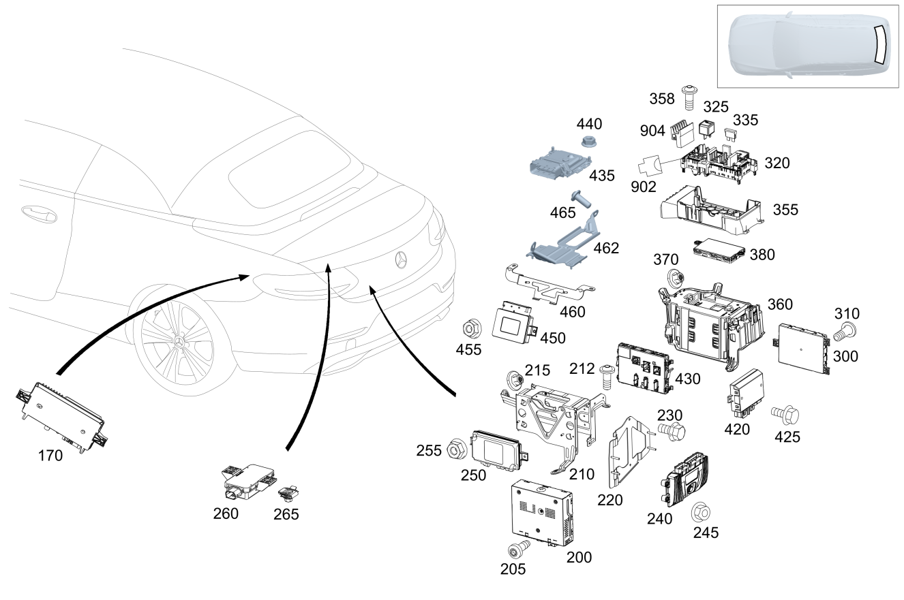

| № | Артикул | Название | Кол. | Примечание | Ограничение |
|---|---|---|---|---|---|
| 170 | A 000 900 18 08 | Блок управления (CONTROL UNIT) | 1 | Система помощи при парковке [672] ДЕТАЛЬ ПОСЛЕ УСТАН.ПРОВЕРИТЬ НА АКТУАЛЬНОСТЬ "ПРОШИВНОГО" ПО [697] ДЕТАЛЬ ПОСТАВЛЯЕТСЯ ТОЛЬКО/ИЛИ ТАКЖЕ КАК ЗАП.ЧАСТЬ | 235+806 |
| 170 | A 000 900 38 06 | Блок управления (CONTROL UNIT) | 1 | Система помощи при парковке [672] ДЕТАЛЬ ПОСЛЕ УСТАН.ПРОВЕРИТЬ НА АКТУАЛЬНОСТЬ "ПРОШИВНОГО" ПО | 235+(805/806)+-(ME06/056) |
| 170 | A 000 900 47 10 | Блок управления (CONTROL UNIT) | 1 | Система помощи при парковке [672] ДЕТАЛЬ ПОСЛЕ УСТАН.ПРОВЕРИТЬ НА АКТУАЛЬНОСТЬ "ПРОШИВНОГО" ПО [697] ДЕТАЛЬ ПОСТАВЛЯЕТСЯ ТОЛЬКО/ИЛИ ТАКЖЕ КАК ЗАП.ЧАСТЬ | 235+(807/808) |
| 170 | A 000 900 18 08 | Блок управления (CONTROL UNIT) | 1 | Система помощи при парковке [672] ДЕТАЛЬ ПОСЛЕ УСТАН.ПРОВЕРИТЬ НА АКТУАЛЬНОСТЬ "ПРОШИВНОГО" ПО [697] ДЕТАЛЬ ПОСТАВЛЯЕТСЯ ТОЛЬКО/ИЛИ ТАКЖЕ КАК ЗАП.ЧАСТЬ | (807/808)+235+-ME06 |
| 170 | A 000 900 65 16 | Блок управления (CONTROL UNIT) | 1 | Система помощи при парковке [672] ДЕТАЛЬ ПОСЛЕ УСТАН.ПРОВЕРИТЬ НА АКТУАЛЬНОСТЬ "ПРОШИВНОГО" ПО [697] ДЕТАЛЬ ПОСТАВЛЯЕТСЯ ТОЛЬКО/ИЛИ ТАКЖЕ КАК ЗАП.ЧАСТЬ | 809+235+218 |
| 170 | A 000 900 63 18 | Блок управления (CONTROL UNIT) | 1 | Система помощи при парковке [672] ДЕТАЛЬ ПОСЛЕ УСТАН.ПРОВЕРИТЬ НА АКТУАЛЬНОСТЬ "ПРОШИВНОГО" ПО [697] ДЕТАЛЬ ПОСТАВЛЯЕТСЯ ТОЛЬКО/ИЛИ ТАКЖЕ КАК ЗАП.ЧАСТЬ | (800+-050)+235+218 |
| 170 | A 000 900 63 18 | Блок управления (CONTROL UNIT) | 1 | Система помощи при парковке [672] ДЕТАЛЬ ПОСЛЕ УСТАН.ПРОВЕРИТЬ НА АКТУАЛЬНОСТЬ "ПРОШИВНОГО" ПО [697] ДЕТАЛЬ ПОСТАВЛЯЕТСЯ ТОЛЬКО/ИЛИ ТАКЖЕ КАК ЗАП.ЧАСТЬ | 800+-050+235 |
| 170 | A 000 900 27 20 | Блок управления (CONTROL UNIT) | 1 | Система помощи при парковке [672] ДЕТАЛЬ ПОСЛЕ УСТАН.ПРОВЕРИТЬ НА АКТУАЛЬНОСТЬ "ПРОШИВНОГО" ПО [697] ДЕТАЛЬ ПОСТАВЛЯЕТСЯ ТОЛЬКО/ИЛИ ТАКЖЕ КАК ЗАП.ЧАСТЬ | 800+050+235+218 |
| 170 | A 000 900 66 16 | Блок управления (CONTROL UNIT) | 1 | Система помощи при парковке [672] ДЕТАЛЬ ПОСЛЕ УСТАН.ПРОВЕРИТЬ НА АКТУАЛЬНОСТЬ "ПРОШИВНОГО" ПО | 809+235+501 |
| 170 | A 000 900 27 20 | Блок управления (CONTROL UNIT) | 1 | Система помощи при парковке [672] ДЕТАЛЬ ПОСЛЕ УСТАН.ПРОВЕРИТЬ НА АКТУАЛЬНОСТЬ "ПРОШИВНОГО" ПО [697] ДЕТАЛЬ ПОСТАВЛЯЕТСЯ ТОЛЬКО/ИЛИ ТАКЖЕ КАК ЗАП.ЧАСТЬ | 800+050+235 |
| 170 | A 000 900 64 18 | Блок управления (CONTROL UNIT) | 1 | Система помощи при парковке [672] ДЕТАЛЬ ПОСЛЕ УСТАН.ПРОВЕРИТЬ НА АКТУАЛЬНОСТЬ "ПРОШИВНОГО" ПО [697] ДЕТАЛЬ ПОСТАВЛЯЕТСЯ ТОЛЬКО/ИЛИ ТАКЖЕ КАК ЗАП.ЧАСТЬ | (800+-050)+235+501 |
| 170 | A 000 900 28 20 | Блок управления (CONTROL UNIT) | 1 | Система помощи при парковке [672] ДЕТАЛЬ ПОСЛЕ УСТАН.ПРОВЕРИТЬ НА АКТУАЛЬНОСТЬ "ПРОШИВНОГО" ПО [697] ДЕТАЛЬ ПОСТАВЛЯЕТСЯ ТОЛЬКО/ИЛИ ТАКЖЕ КАК ЗАП.ЧАСТЬ | 800+050+235+501 |
| 170 | A 000 900 12 22 | Блок управления (CONTROL UNIT) | 1 | Система помощи при парковке [672] ДЕТАЛЬ ПОСЛЕ УСТАН.ПРОВЕРИТЬ НА АКТУАЛЬНОСТЬ "ПРОШИВНОГО" ПО [697] ДЕТАЛЬ ПОСТАВЛЯЕТСЯ ТОЛЬКО/ИЛИ ТАКЖЕ КАК ЗАП.ЧАСТЬ | 801+235+218 |
| 170 | A 000 900 12 22 | Блок управления (CONTROL UNIT) | 1 | Система помощи при парковке [672] ДЕТАЛЬ ПОСЛЕ УСТАН.ПРОВЕРИТЬ НА АКТУАЛЬНОСТЬ "ПРОШИВНОГО" ПО [697] ДЕТАЛЬ ПОСТАВЛЯЕТСЯ ТОЛЬКО/ИЛИ ТАКЖЕ КАК ЗАП.ЧАСТЬ | 801+235+218 |
| 170 | A 000 900 12 22 | Блок управления (CONTROL UNIT) | 1 | Система помощи при парковке [672] ДЕТАЛЬ ПОСЛЕ УСТАН.ПРОВЕРИТЬ НА АКТУАЛЬНОСТЬ "ПРОШИВНОГО" ПО [697] ДЕТАЛЬ ПОСТАВЛЯЕТСЯ ТОЛЬКО/ИЛИ ТАКЖЕ КАК ЗАП.ЧАСТЬ | 801+235 |
| 170 | A 000 900 12 22 | Блок управления (CONTROL UNIT) | 1 | Система помощи при парковке [672] ДЕТАЛЬ ПОСЛЕ УСТАН.ПРОВЕРИТЬ НА АКТУАЛЬНОСТЬ "ПРОШИВНОГО" ПО [697] ДЕТАЛЬ ПОСТАВЛЯЕТСЯ ТОЛЬКО/ИЛИ ТАКЖЕ КАК ЗАП.ЧАСТЬ | 801+235 |
| 170 | A 000 900 13 22 | Блок управления (CONTROL UNIT) | 1 | Система помощи при парковке [672] ДЕТАЛЬ ПОСЛЕ УСТАН.ПРОВЕРИТЬ НА АКТУАЛЬНОСТЬ "ПРОШИВНОГО" ПО | 801+235+501 |
| 170 | A 000 900 13 22 | Блок управления (CONTROL UNIT) | 1 | Система помощи при парковке [672] ДЕТАЛЬ ПОСЛЕ УСТАН.ПРОВЕРИТЬ НА АКТУАЛЬНОСТЬ "ПРОШИВНОГО" ПО | 801+235+501 |
| 170 | A 000 900 43 32 | Блок управления (CONTROL UNIT) | 1 | Система помощи при парковке [672] ДЕТАЛЬ ПОСЛЕ УСТАН.ПРОВЕРИТЬ НА АКТУАЛЬНОСТЬ "ПРОШИВНОГО" ПО [697] ДЕТАЛЬ ПОСТАВЛЯЕТСЯ ТОЛЬКО/ИЛИ ТАКЖЕ КАК ЗАП.ЧАСТЬ | 235+501+835 |
| 170 | A 000 900 43 27 | Блок управления (CONTROL UNIT) | 1 | Система помощи при парковке [672] ДЕТАЛЬ ПОСЛЕ УСТАН.ПРОВЕРИТЬ НА АКТУАЛЬНОСТЬ "ПРОШИВНОГО" ПО [697] ДЕТАЛЬ ПОСТАВЛЯЕТСЯ ТОЛЬКО/ИЛИ ТАКЖЕ КАК ЗАП.ЧАСТЬ | 802+235+218 |
| 170 | A 000 900 81 29 | Блок управления (CONTROL UNIT) | 1 | Система помощи при парковке [672] ДЕТАЛЬ ПОСЛЕ УСТАН.ПРОВЕРИТЬ НА АКТУАЛЬНОСТЬ "ПРОШИВНОГО" ПО | 802+235+218 |
| 170 | A 000 900 42 32 | Блок управления (CONTROL UNIT) | 1 | Система помощи при парковке [672] ДЕТАЛЬ ПОСЛЕ УСТАН.ПРОВЕРИТЬ НА АКТУАЛЬНОСТЬ "ПРОШИВНОГО" ПО | 802+235+218 |
| 170 | A 000 900 44 34 | Блок управления (CONTROL UNIT) | 1 | Система помощи при парковке [672] ДЕТАЛЬ ПОСЛЕ УСТАН.ПРОВЕРИТЬ НА АКТУАЛЬНОСТЬ "ПРОШИВНОГО" ПО | 802+235+218 |
| 170 | A 000 900 43 27 | Блок управления (CONTROL UNIT) | 1 | Система помощи при парковке [672] ДЕТАЛЬ ПОСЛЕ УСТАН.ПРОВЕРИТЬ НА АКТУАЛЬНОСТЬ "ПРОШИВНОГО" ПО [697] ДЕТАЛЬ ПОСТАВЛЯЕТСЯ ТОЛЬКО/ИЛИ ТАКЖЕ КАК ЗАП.ЧАСТЬ | 802+235 |
| 170 | A 000 900 81 29 | Блок управления (CONTROL UNIT) | 1 | Система помощи при парковке [672] ДЕТАЛЬ ПОСЛЕ УСТАН.ПРОВЕРИТЬ НА АКТУАЛЬНОСТЬ "ПРОШИВНОГО" ПО | 802+235 |
| 170 | A 000 900 42 32 | Блок управления (CONTROL UNIT) | 1 | Система помощи при парковке [672] ДЕТАЛЬ ПОСЛЕ УСТАН.ПРОВЕРИТЬ НА АКТУАЛЬНОСТЬ "ПРОШИВНОГО" ПО | 802+235 |
| 170 | A 000 900 44 34 | Блок управления (CONTROL UNIT) | 1 | Система помощи при парковке [672] ДЕТАЛЬ ПОСЛЕ УСТАН.ПРОВЕРИТЬ НА АКТУАЛЬНОСТЬ "ПРОШИВНОГО" ПО | 802+235 |
| 170 | A 000 900 44 27 | Блок управления (CONTROL UNIT) | 1 | Система помощи при парковке [672] ДЕТАЛЬ ПОСЛЕ УСТАН.ПРОВЕРИТЬ НА АКТУАЛЬНОСТЬ "ПРОШИВНОГО" ПО [697] ДЕТАЛЬ ПОСТАВЛЯЕТСЯ ТОЛЬКО/ИЛИ ТАКЖЕ КАК ЗАП.ЧАСТЬ | 802+235+501 |
| 170 | A 000 900 82 29 | Блок управления (CONTROL UNIT) | 1 | Система помощи при парковке [672] ДЕТАЛЬ ПОСЛЕ УСТАН.ПРОВЕРИТЬ НА АКТУАЛЬНОСТЬ "ПРОШИВНОГО" ПО [697] ДЕТАЛЬ ПОСТАВЛЯЕТСЯ ТОЛЬКО/ИЛИ ТАКЖЕ КАК ЗАП.ЧАСТЬ | 802+235+501 |
| 170 | A 000 900 43 32 | Блок управления (CONTROL UNIT) | 1 | Система помощи при парковке [672] ДЕТАЛЬ ПОСЛЕ УСТАН.ПРОВЕРИТЬ НА АКТУАЛЬНОСТЬ "ПРОШИВНОГО" ПО [697] ДЕТАЛЬ ПОСТАВЛЯЕТСЯ ТОЛЬКО/ИЛИ ТАКЖЕ КАК ЗАП.ЧАСТЬ | 802+235+501/802+235+501+835 |
| 170 | A 000 900 45 34 | Блок управления (CONTROL UNIT) | 1 | Система помощи при парковке [672] ДЕТАЛЬ ПОСЛЕ УСТАН.ПРОВЕРИТЬ НА АКТУАЛЬНОСТЬ "ПРОШИВНОГО" ПО [697] ДЕТАЛЬ ПОСТАВЛЯЕТСЯ ТОЛЬКО/ИЛИ ТАКЖЕ КАК ЗАП.ЧАСТЬ | 802+235+501/802+235+501+835 |
| 170 | A 000 900 44 34 | Блок управления (CONTROL UNIT) | 1 | Система помощи при парковке [672] ДЕТАЛЬ ПОСЛЕ УСТАН.ПРОВЕРИТЬ НА АКТУАЛЬНОСТЬ "ПРОШИВНОГО" ПО | (802/803/804)+235+218 |
| 170 | A 000 900 26 40 | Блок управления (CONTROL UNIT) | 1 | Система помощи при парковке [672] ДЕТАЛЬ ПОСЛЕ УСТАН.ПРОВЕРИТЬ НА АКТУАЛЬНОСТЬ "ПРОШИВНОГО" ПО | (802/803/804)+235+218 |
| 170 | A 000 900 44 34 | Блок управления (CONTROL UNIT) | 1 | Система помощи при парковке [672] ДЕТАЛЬ ПОСЛЕ УСТАН.ПРОВЕРИТЬ НА АКТУАЛЬНОСТЬ "ПРОШИВНОГО" ПО | (802/803/804)+235 |
| 170 | A 000 900 26 40 | Блок управления (CONTROL UNIT) | 1 | Система помощи при парковке [672] ДЕТАЛЬ ПОСЛЕ УСТАН.ПРОВЕРИТЬ НА АКТУАЛЬНОСТЬ "ПРОШИВНОГО" ПО | (802/803/804)+235 |
| 170 | A 000 900 45 34 | Блок управления (CONTROL UNIT) | 1 | Система помощи при парковке [672] ДЕТАЛЬ ПОСЛЕ УСТАН.ПРОВЕРИТЬ НА АКТУАЛЬНОСТЬ "ПРОШИВНОГО" ПО [697] ДЕТАЛЬ ПОСТАВЛЯЕТСЯ ТОЛЬКО/ИЛИ ТАКЖЕ КАК ЗАП.ЧАСТЬ | (802/803/804)+(235+501/235+501+835) |
| 170 | A 000 900 27 40 | Блок управления (CONTROL UNIT) | 1 | Система помощи при парковке [672] ДЕТАЛЬ ПОСЛЕ УСТАН.ПРОВЕРИТЬ НА АКТУАЛЬНОСТЬ "ПРОШИВНОГО" ПО [697] ДЕТАЛЬ ПОСТАВЛЯЕТСЯ ТОЛЬКО/ИЛИ ТАКЖЕ КАК ЗАП.ЧАСТЬ | (802/803/804)+(235+501/235+501+835) |
| 200 | A 222 900 89 11 | Блок управления (CONTROL UNIT) | 1 | Тюнер, цифровой [672] ДЕТАЛЬ ПОСЛЕ УСТАН.ПРОВЕРИТЬ НА АКТУАЛЬНОСТЬ "ПРОШИВНОГО" ПО [697] ДЕТАЛЬ ПОСТАВЛЯЕТСЯ ТОЛЬКО/ИЛИ ТАКЖЕ КАК ЗАП.ЧАСТЬ | (805/806/807/808)+537 |
| 200 | A 222 900 90 11 | Блок управления (CONTROL UNIT) | 1 | Тюнер, цифровой [672] ДЕТАЛЬ ПОСЛЕ УСТАН.ПРОВЕРИТЬ НА АКТУАЛЬНОСТЬ "ПРОШИВНОГО" ПО [697] ДЕТАЛЬ ПОСТАВЛЯЕТСЯ ТОЛЬКО/ИЛИ ТАКЖЕ КАК ЗАП.ЧАСТЬ | (805/806/807/808)+537+865 |
| 200 | A 222 900 39 10 | Блок управления (CONTROL UNIT) | 1 | Тюнер, цифровой; TV [672] ДЕТАЛЬ ПОСЛЕ УСТАН.ПРОВЕРИТЬ НА АКТУАЛЬНОСТЬ "ПРОШИВНОГО" ПО | (805/806/807/808)+498+865 |
| 200 | A 222 900 45 13 | Блок управления (CONTROL UNIT) | 1 | Тюнер, цифровой [672] ДЕТАЛЬ ПОСЛЕ УСТАН.ПРОВЕРИТЬ НА АКТУАЛЬНОСТЬ "ПРОШИВНОГО" ПО [697] ДЕТАЛЬ ПОСТАВЛЯЕТСЯ ТОЛЬКО/ИЛИ ТАКЖЕ КАК ЗАП.ЧАСТЬ | (805/806/807/808)+498+865 |
| 200 | A 222 900 90 07 | Блок управления (CONTROL UNIT) | 1 | Тюнер, цифровой [672] ДЕТАЛЬ ПОСЛЕ УСТАН.ПРОВЕРИТЬ НА АКТУАЛЬНОСТЬ "ПРОШИВНОГО" ПО | (805/806/807/808)+865+(830/858) |
| 200 | A 222 900 33 10 | Блок управления (CONTROL UNIT) | 1 | Тюнер, цифровой [672] ДЕТАЛЬ ПОСЛЕ УСТАН.ПРОВЕРИТЬ НА АКТУАЛЬНОСТЬ "ПРОШИВНОГО" ПО | (805/806/807/808)+865 |
| 200 | A 222 900 46 11 | Блок управления (CONTROL UNIT) | 1 | Тюнер, цифровой [672] ДЕТАЛЬ ПОСЛЕ УСТАН.ПРОВЕРИТЬ НА АКТУАЛЬНОСТЬ "ПРОШИВНОГО" ПО | (805/806/807/808)+835+865 |
| 200 | A 222 900 85 14 | Блок управления (CONTROL UNIT) | 1 | Тюнер, цифровой [672] ДЕТАЛЬ ПОСЛЕ УСТАН.ПРОВЕРИТЬ НА АКТУАЛЬНОСТЬ "ПРОШИВНОГО" ПО [697] ДЕТАЛЬ ПОСТАВЛЯЕТСЯ ТОЛЬКО/ИЛИ ТАКЖЕ КАК ЗАП.ЧАСТЬ | (805/806/807/808)+835+865 |
| 200 | A 213 900 93 19 | Блок управления (CONTROL UNIT) | 1 | Тюнер, цифровой [672] ДЕТАЛЬ ПОСЛЕ УСТАН.ПРОВЕРИТЬ НА АКТУАЛЬНОСТЬ "ПРОШИВНОГО" ПО | (805/806/807/808)+197+835+865 |
| 200 | A 213 900 95 20 | Блок управления (CONTROL UNIT) | 1 | Тюнер, цифровой [672] ДЕТАЛЬ ПОСЛЕ УСТАН.ПРОВЕРИТЬ НА АКТУАЛЬНОСТЬ "ПРОШИВНОГО" ПО | (805/806/807/808)+197+835+865 |
| 200 | A 213 900 53 23 | Блок управления (CONTROL UNIT) | 1 | Тюнер, цифровой [672] ДЕТАЛЬ ПОСЛЕ УСТАН.ПРОВЕРИТЬ НА АКТУАЛЬНОСТЬ "ПРОШИВНОГО" ПО [697] ДЕТАЛЬ ПОСТАВЛЯЕТСЯ ТОЛЬКО/ИЛИ ТАКЖЕ КАК ЗАП.ЧАСТЬ | (805/806/807/808)+197+835+865 |
| 200 | A 213 900 95 16 | Блок управления (CONTROL UNIT) | 1 | Тюнер, цифровой [672] ДЕТАЛЬ ПОСЛЕ УСТАН.ПРОВЕРИТЬ НА АКТУАЛЬНОСТЬ "ПРОШИВНОГО" ПО | (805/806/807/808)+197+865 |
| 200 | A 213 900 96 20 | Блок управления (CONTROL UNIT) | 1 | Тюнер, цифровой [672] ДЕТАЛЬ ПОСЛЕ УСТАН.ПРОВЕРИТЬ НА АКТУАЛЬНОСТЬ "ПРОШИВНОГО" ПО | (805/806/807/808)+197+865 |
| 200 | A 213 900 33 21 | Блок управления (CONTROL UNIT) | 1 | Тюнер, цифровой [672] ДЕТАЛЬ ПОСЛЕ УСТАН.ПРОВЕРИТЬ НА АКТУАЛЬНОСТЬ "ПРОШИВНОГО" ПО [697] ДЕТАЛЬ ПОСТАВЛЯЕТСЯ ТОЛЬКО/ИЛИ ТАКЖЕ КАК ЗАП.ЧАСТЬ | (805/806/807/808)+197+865 |
| 200 | A 222 900 52 11 | Блок управления (CONTROL UNIT) | 1 | Тюнер, цифровой [672] ДЕТАЛЬ ПОСЛЕ УСТАН.ПРОВЕРИТЬ НА АКТУАЛЬНОСТЬ "ПРОШИВНОГО" ПО | (805/806/807/808)+536 |
| 200 | A 222 900 29 15 | Блок управления (CONTROL UNIT) | 1 | Тюнер, цифровой [672] ДЕТАЛЬ ПОСЛЕ УСТАН.ПРОВЕРИТЬ НА АКТУАЛЬНОСТЬ "ПРОШИВНОГО" ПО [697] ДЕТАЛЬ ПОСТАВЛЯЕТСЯ ТОЛЬКО/ИЛИ ТАКЖЕ КАК ЗАП.ЧАСТЬ | (805/806/807/808)+536 |
| 200 | A 213 900 09 24 | Блок управления (CONTROL UNIT) | 1 | Тюнер, цифровой [672] ДЕТАЛЬ ПОСЛЕ УСТАН.ПРОВЕРИТЬ НА АКТУАЛЬНОСТЬ "ПРОШИВНОГО" ПО | (809/800/801/802/803/804)+865+-835 |
| 200 | A 213 900 10 24 | Блок управления (CONTROL UNIT) | 1 | Тюнер, цифровой [672] ДЕТАЛЬ ПОСЛЕ УСТАН.ПРОВЕРИТЬ НА АКТУАЛЬНОСТЬ "ПРОШИВНОГО" ПО | (809/800/801/802/803/804)+498+865+-835 |
| 200 | A 213 900 54 23 | Блок управления (CONTROL UNIT) | 1 | Тюнер, цифровой [672] ДЕТАЛЬ ПОСЛЕ УСТАН.ПРОВЕРИТЬ НА АКТУАЛЬНОСТЬ "ПРОШИВНОГО" ПО | (809/800/801/802/803/804)+835+865 |
| 200 | A 213 900 97 26 | Блок управления (CONTROL UNIT) | 1 | Тюнер, цифровой [672] ДЕТАЛЬ ПОСЛЕ УСТАН.ПРОВЕРИТЬ НА АКТУАЛЬНОСТЬ "ПРОШИВНОГО" ПО [697] ДЕТАЛЬ ПОСТАВЛЯЕТСЯ ТОЛЬКО/ИЛИ ТАКЖЕ КАК ЗАП.ЧАСТЬ | (809/800/801/802/803/804)+835+865 |
| 205 | N 000000 003251 | Винт с 6-гр. глвк (HEXALOBULAR SCREW) | 3 | Тюнер к держателю; M5X12 | (807/808)+(536/537/865) |
| 205 | N 000000 003251 | Винт с 6-гр. глвк (HEXALOBULAR SCREW) | 3 | Тюнер к держателю; M5X12 | (809/800/801/802/803/804)+(865/865+498) |
| 210 | A 205 545 86 00 | Держатель (HOLDER) | 1 | (805/806/807/808)+(M177+M40+(U78/466/467)/M276+U78+M016/501/536/537/865) | |
| 210 | A 205 545 98 00 | Держатель (HOLDER) | 1 | (865/233/235)+-(805/806/807/808) | |
| 212 | N 000000 002349 | Винт с 6-гр. глвк (HEXALOBULAR SCREW) | 2 | Крепление держателя; 6X16 | 501/536/537/865 |
| 215 | N 000000 008293 | ГАЙКА КОМБИНИРОВАННАЯ (NUT-AND-WASHER ASSEMBLY) | 2 | Крепление держателя; M6 | 099+(218/501/889/537/550/893) |
| 215 | A 000 990 99 18 | Пластмассовая гайка откр. (PLASTIC NUT OPEN) | 2 | Крепление кронштейна к остову кузова | 099+(218/501/889/537/550/893) |
| 215 | A 000 990 28 62 | Пластмассовая гайка (PLASTIC NUT) | 2 | Крепление кронштейна к остову кузова | 218/501/537/865 |
| 215 | A 000 990 99 18 | Пластмассовая гайка откр. (PLASTIC NUT OPEN) | 2 | Крепление кронштейна к остову кузова | 218/501/537/865 |
| 240 | A 205 900 88 23 | Блок управления (CONTROL UNIT) | 1 | Динамика движения [672] ДЕТАЛЬ ПОСЛЕ УСТАН.ПРОВЕРИТЬ НА АКТУАЛЬНОСТЬ "ПРОШИВНОГО" ПО | (U78+-M016/466/467)+-U98 |
| 240 | A 205 900 02 27 | Блок управления (CONTROL UNIT) | 1 | Динамика движения [672] ДЕТАЛЬ ПОСЛЕ УСТАН.ПРОВЕРИТЬ НА АКТУАЛЬНОСТЬ "ПРОШИВНОГО" ПО [697] ДЕТАЛЬ ПОСТАВЛЯЕТСЯ ТОЛЬКО/ИЛИ ТАКЖЕ КАК ЗАП.ЧАСТЬ | (806/807/808/809/800/801/802)+(U78+-M016/466/467)+-U98 |
| 240 | A 205 900 56 29 | Блок управления (CONTROL UNIT) | 1 | Динамика движения [672] ДЕТАЛЬ ПОСЛЕ УСТАН.ПРОВЕРИТЬ НА АКТУАЛЬНОСТЬ "ПРОШИВНОГО" ПО [697] ДЕТАЛЬ ПОСТАВЛЯЕТСЯ ТОЛЬКО/ИЛИ ТАКЖЕ КАК ЗАП.ЧАСТЬ | (806/807/808/809/800/801/802)+(U78+-M016/466/467)+-U98 |
| 245 | N 910112 005000 | Шестигранная гайка (HEXAGON NUT) | 4 | Крепление блока управления к кронштейну; M5 | (805/806/807/808)+(U78/466/467)+U98 |
| 245 | N 910112 005000 | Шестигранная гайка (HEXAGON NUT) | 4 | Крепление блока управления к кронштейну; M5 | U78/466/467 |
| 250 | A 205 900 98 18 | Блок управления (CONTROL UNIT) | 1 | Камера с обзором 360 градусов [672] ДЕТАЛЬ ПОСЛЕ УСТАН.ПРОВЕРИТЬ НА АКТУАЛЬНОСТЬ "ПРОШИВНОГО" ПО | (805/806/807+-057)+501 |
| 250 | A 205 900 26 29 | Блок управления (CONTROL UNIT) | 1 | Камера с обзором 360 градусов [672] ДЕТАЛЬ ПОСЛЕ УСТАН.ПРОВЕРИТЬ НА АКТУАЛЬНОСТЬ "ПРОШИВНОГО" ПО | (807+057/808)+501 |
| 255 | N 910112 005000 | Шестигранная гайка (HEXAGON NUT) | 2 | Крепление блока управления; M5 | (806/807/808)+501 |
| 260 | A 000 900 37 13 | Блок управления (CONTROL UNIT) | 1 | Давление воздуха в шинах [672] ДЕТАЛЬ ПОСЛЕ УСТАН.ПРОВЕРИТЬ НА АКТУАЛЬНОСТЬ "ПРОШИВНОГО" ПО [697] ДЕТАЛЬ ПОСТАВЛЯЕТСЯ ТОЛЬКО/ИЛИ ТАКЖЕ КАК ЗАП.ЧАСТЬ | (808/809/800/801/802/803/804)+475 |
| 260 | A 000 900 69 07 | Блок управления (CONTROL UNIT) | 1 | Давление воздуха в шинах [672] ДЕТАЛЬ ПОСЛЕ УСТАН.ПРОВЕРИТЬ НА АКТУАЛЬНОСТЬ "ПРОШИВНОГО" ПО [697] ДЕТАЛЬ ПОСТАВЛЯЕТСЯ ТОЛЬКО/ИЛИ ТАКЖЕ КАК ЗАП.ЧАСТЬ | (805/806/807)+475 |
| 265 | A 000 990 35 62 | Пластмассовая гайка (PLASTIC NUT) | 2 | Крепление блока управления | 475 |
| 300 | A 205 900 98 45 | Блок управления (CONTROL UNIT) | 1 | Модуль обработки сигналов и управления сзади SAM [672] ДЕТАЛЬ ПОСЛЕ УСТАН.ПРОВЕРИТЬ НА АКТУАЛЬНОСТЬ "ПРОШИВНОГО" ПО [697] ДЕТАЛЬ ПОСТАВЛЯЕТСЯ ТОЛЬКО/ИЛИ ТАКЖЕ КАК ЗАП.ЧАСТЬ | 809 |
| 300 | A 205 900 59 47 | Блок управления (CONTROL UNIT) | 1 | Модуль обработки сигналов и управления сзади [672] ДЕТАЛЬ ПОСЛЕ УСТАН.ПРОВЕРИТЬ НА АКТУАЛЬНОСТЬ "ПРОШИВНОГО" ПО [697] ДЕТАЛЬ ПОСТАВЛЯЕТСЯ ТОЛЬКО/ИЛИ ТАКЖЕ КАК ЗАП.ЧАСТЬ | 801 |
| 300 | A 205 900 59 47 | Блок управления (CONTROL UNIT) | 1 | Модуль обработки сигналов и управления сзади [672] ДЕТАЛЬ ПОСЛЕ УСТАН.ПРОВЕРИТЬ НА АКТУАЛЬНОСТЬ "ПРОШИВНОГО" ПО [697] ДЕТАЛЬ ПОСТАВЛЯЕТСЯ ТОЛЬКО/ИЛИ ТАКЖЕ КАК ЗАП.ЧАСТЬ | |
| 300 | A 205 900 54 51 | Блок управления (CONTROL UNIT) | 1 | Модуль обработки сигналов и управления сзади [672] ДЕТАЛЬ ПОСЛЕ УСТАН.ПРОВЕРИТЬ НА АКТУАЛЬНОСТЬ "ПРОШИВНОГО" ПО | |
| 300 | A 222 900 71 09 | Блок управления (CONTROL UNIT) | 1 | Модуль обработки сигналов и управления сзади SAM [672] ДЕТАЛЬ ПОСЛЕ УСТАН.ПРОВЕРИТЬ НА АКТУАЛЬНОСТЬ "ПРОШИВНОГО" ПО [697] ДЕТАЛЬ ПОСТАВЛЯЕТСЯ ТОЛЬКО/ИЛИ ТАКЖЕ КАК ЗАП.ЧАСТЬ | 807/808 |
| 300 | A 222 900 60 14 | Блок управления (CONTROL UNIT) | 1 | Модуль обработки сигналов и управления сзади SAM [672] ДЕТАЛЬ ПОСЛЕ УСТАН.ПРОВЕРИТЬ НА АКТУАЛЬНОСТЬ "ПРОШИВНОГО" ПО [697] ДЕТАЛЬ ПОСТАВЛЯЕТСЯ ТОЛЬКО/ИЛИ ТАКЖЕ КАК ЗАП.ЧАСТЬ | 807/808 |
| 300 | A 205 900 74 37 | Блок управления (CONTROL UNIT) | 1 | Модуль обработки сигналов и управления сзади SAM [672] ДЕТАЛЬ ПОСЛЕ УСТАН.ПРОВЕРИТЬ НА АКТУАЛЬНОСТЬ "ПРОШИВНОГО" ПО | 809 |
| 300 | A 205 900 73 43 | Блок управления (CONTROL UNIT) | 1 | Модуль обработки сигналов и управления сзади SAM [672] ДЕТАЛЬ ПОСЛЕ УСТАН.ПРОВЕРИТЬ НА АКТУАЛЬНОСТЬ "ПРОШИВНОГО" ПО [697] ДЕТАЛЬ ПОСТАВЛЯЕТСЯ ТОЛЬКО/ИЛИ ТАКЖЕ КАК ЗАП.ЧАСТЬ | 800 |
| 310 | N 000000 002349 | Винт с 6-гр. глвк (HEXALOBULAR SCREW) | 1 | Крепление блока управления; 6X16 | |
| 320 | A 205 906 25 01 | Блок реле (RELAY UNIT) | 1 | Блок предохранителей и реле (SRB), неукомплектованный | (805/806/807/808)+-(M177/M016/ME04/ME06) |
| 320 | A 205 906 85 01 | Блок реле (RELAY UNIT) | 1 | Блок предохранителей и реле (SRB), неукомплектованный | 805+(P21/218/386/P65/403/499/501/537/550/810/865/881/890/965/970/974/975/ME04/ME06/U22/B63)+-(M177/M276+M016) |
| 320 | A 205 906 85 01 | Блок реле (RELAY UNIT) | 1 | Блок предохранителей и реле (SRB), неукомплектованный | 806+(P21/218/386/P65/403/499/501/537/550/810/865/881/890/965/970/974/975/ME04/ME06/U22/B63)+-(M177/M276+M016) |
| 320 | A 205 906 85 01 | Блок реле (RELAY UNIT) | 1 | Блок предохранителей и реле (SRB), неукомплектованный | 807+(P21/218/386/P65/403/499/501/537/550/810/865/881/890/965/970/974/975/ME04/ME06/U22/B63)+-(M177/M276+M016) |
| 320 | A 205 906 85 01 | Блок реле (RELAY UNIT) | 1 | Блок предохранителей и реле (SRB), неукомплектованный | 808+(P21/218/386/P65/403/499/501/537/550/810/865/881/890/965/970/974/975/ME04/ME06/U22/B63)+-(M177/M276+M016) |
| 320 | A 213 906 87 01 | Блок реле (RELAY UNIT) | 1 | Блок предохранителей и реле (SRB), неукомплектованный | 809+-(M177/M016/ME04/ME05/ME06) |
| 320 | A 213 906 88 01 | Блок реле (RELAY UNIT) | 1 | Блок предохранителей и реле (SRB), неукомплектованный | 809+(P21/218/379/386/P65/403/501/537/550/810/865/881/890/965/970/974/975/ME05/U22/B63/B24)+-(M177/M016) |
| 320 | A 213 906 87 01 | Блок реле (RELAY UNIT) | 1 | Блок предохранителей и реле (SRB), неукомплектованный | (800/801/802/803/804)+-(M177/M016) |
| 320 | A 213 906 88 01 | Блок реле (RELAY UNIT) | 1 | Блок предохранителей и реле (SRB), неукомплектованный | (800/801/802/803/804)+(550/970/974/975)+-(M177/M016) |
| 325 | A 000 982 19 23 | Реле (RELAY) | 1 | Гнездо S | |
| 325 | A 000 982 96 04 | Реле (RELAY) | 1 | Гнездо T | |
| 325 | A 000 982 64 23 | Реле (RELAY) | 1 | Гнездо T | |
| 325 | A 003 542 16 19 | Реле (RELAY) | 1 | Гнездо T | |
| 325 | A 000 982 19 23 | Реле (RELAY) | 1 | Гнездо U | |
| 325 | A 000 982 82 23 | Реле (RELAY) | 1 | Гнездо V | |
| 325 | A 003 542 08 19 | Реле (RELAY) | 1 | Гнездо V | |
| 325 | A 000 982 19 23 | Реле (RELAY) | 1 | Гнездо X | |
| 325 | A 003 542 30 19 | Контактор (CONTACTOR) | 1 | Гнездо Y | |
| 325 | A 003 542 04 19 | Реле (RELAY) | 1 | Гнездо Y | |
| 325 | A 000 982 77 23 | Реле (RELAY) | 1 | Гнездо Y | |
| 335 | N 000000 007900 | Плавкая вставка (FUSE LINK) | 20 | MINI; F\-5\-N | 805/806/807/808 |
| 335 | N 000000 007901 | Плавкая вставка (FUSE LINK) | 3 | MINI; F\-7.5\-N | 805/806/807/808 |
| 335 | N 000000 007902 | Плавкая вставка (FUSE LINK) | 1 | MINI; F\-10\-N | 805/806/807/808 |
| 335 | N 000000 007889 | Плавкая вставка (FUSE LINK) | 4 | ATO; C\-5\-N | 805/806/807/808 |
| 335 | N 000000 007890 | Плавкая вставка (FUSE LINK) | 1 | ATO; C\-7.5\-N | 805/806/807/808 |
| 335 | N 000000 007891 | Плавкая вставка (FUSE LINK) | 1 | ATO; C\-10\-N | 805/806/807/808 |
| 335 | N 000000 007892 | Плавкая вставка (FUSE LINK) | 9 | ATO; C\-15\-N | 805/806/807/808 |
| 335 | N 000000 007893 | Плавкая вставка (FUSE LINK) | 3 | ATO; C\-20\-N | 805/806/807/808 |
| 335 | N 000000 007894 | Плавкая вставка (FUSE LINK) | 8 | ATO; C\-25\-N | 805/806/807/808 |
| 335 | N 000000 007895 | Плавкая вставка (FUSE LINK) | 11 | ATO; C\-30\-N | 805/806/807/808 |
| 335 | N 000000 007905 | Плавкая вставка (FUSE LINK) | 1 | MAXI; E\-30\-N | 805/806/807/808 |
| 335 | N 000000 007906 | Плавкая вставка (FUSE LINK) | 5 | MAXI; E\-40\-N | 805/806/807/808 |
| 335 | N 000000 007664 | Плавкая вставка (FUSE LINK) | 20 | MINI; F\-5A\-S | |
| 335 | N 000000 007665 | Плавкая вставка (FUSE LINK) | 3 | MINI; F\-7.5A\-S | |
| 335 | N 000000 007666 | Плавкая вставка (FUSE LINK) | 1 | MINI; F\-10\-S | |
| 335 | N 000000 007667 | Плавкая вставка (FUSE LINK) | 4 | MINI; F\-15\-S | 809/800/801/802/803/804 |
| 335 | N 000000 007648 | Плавкая вставка (FUSE LINK) | 4 | ATO; C\-5A\-S | |
| 335 | N 000000 007649 | Плавкая вставка (FUSE LINK) | 1 | ATO; C\-7,5A\-S | |
| 335 | N 000000 007650 | Плавкая вставка (FUSE LINK) | 1 | ATO; C\-10A\-S | |
| 335 | N 000000 007651 | Плавкая вставка (FUSE LINK) | 9 | ATO; C\-15A\-S | |
| 335 | N 000000 007652 | Плавкая вставка (FUSE LINK) | 3 | ATO; C\-20A\-S | |
| 335 | N 000000 007653 | Плавкая вставка (FUSE LINK) | 8 | ATO; C\-25A\-S | |
| 335 | N 000000 007654 | Плавкая вставка (FUSE LINK) | 11 | ATO; C\-30A\-S | |
| 335 | N 000000 007659 | Плавкая вставка (FUSE LINK) | 9 | MAXI; E\-40A\-S | |
| 335 | N 000000 007658 | Плавкая вставка (FUSE LINK) | 1 | MAXI; E\-30A\-S | |
| 335 | N 000000 007660 | Плавкая вставка (FUSE LINK) | 1 | MAXI; E\-50A\-S | 809/800/801/802/803/804 |
| 335 | N 000000 007661 | Плавкая вставка (FUSE LINK) | 1 | MAXI; E\-60\-S | 809/800/801/802/803/804 |
| 355 | A 205 540 89 27 | Держатель блока упр. (CONTROL UNIT HOLDER) | 1 | Модуль реле | |
| 358 | A 166 990 00 12 | болт (SCREW) | 1 | Держатель к держателю | |
| 360 | A 238 545 08 00 | Держатель (HOLDER) | 1 | ||
| 370 | A 000 990 28 62 | Пластмассовая гайка (PLASTIC NUT) | 3 | Держатель к остову кузова | |
| 380 | A 222 900 42 13 | Блок управления (CONTROL UNIT) | 1 | Система "Keyless\-Go" [672] ДЕТАЛЬ ПОСЛЕ УСТАН.ПРОВЕРИТЬ НА АКТУАЛЬНОСТЬ "ПРОШИВНОГО" ПО [697] ДЕТАЛЬ ПОСТАВЛЯЕТСЯ ТОЛЬКО/ИЛИ ТАКЖЕ КАК ЗАП.ЧАСТЬ | (805/806/807/808)+(889/893) |
| 380 | A 222 900 99 15 | Блок управления (CONTROL UNIT) | 1 | Система "Keyless\-Go" [672] ДЕТАЛЬ ПОСЛЕ УСТАН.ПРОВЕРИТЬ НА АКТУАЛЬНОСТЬ "ПРОШИВНОГО" ПО | 809 |
| 380 | A 222 900 00 16 | Блок управления (CONTROL UNIT) | 1 | Система "Keyless\-Go" [672] ДЕТАЛЬ ПОСЛЕ УСТАН.ПРОВЕРИТЬ НА АКТУАЛЬНОСТЬ "ПРОШИВНОГО" ПО [697] ДЕТАЛЬ ПОСТАВЛЯЕТСЯ ТОЛЬКО/ИЛИ ТАКЖЕ КАК ЗАП.ЧАСТЬ | 809+889 |
| 380 | A 222 900 47 18 | Блок управления (CONTROL UNIT) | 1 | Система "Keyless\-Go" [672] ДЕТАЛЬ ПОСЛЕ УСТАН.ПРОВЕРИТЬ НА АКТУАЛЬНОСТЬ "ПРОШИВНОГО" ПО [697] ДЕТАЛЬ ПОСТАВЛЯЕТСЯ ТОЛЬКО/ИЛИ ТАКЖЕ КАК ЗАП.ЧАСТЬ | 809+889 |
| 380 | A 222 900 03 16 | Блок управления (CONTROL UNIT) | 2 | Система "Keyless\-Go" [672] ДЕТАЛЬ ПОСЛЕ УСТАН.ПРОВЕРИТЬ НА АКТУАЛЬНОСТЬ "ПРОШИВНОГО" ПО | 809+896 |
| 380 | A 222 900 99 15 | Блок управления (CONTROL UNIT) | 1 | Система "Keyless\-Go" [672] ДЕТАЛЬ ПОСЛЕ УСТАН.ПРОВЕРИТЬ НА АКТУАЛЬНОСТЬ "ПРОШИВНОГО" ПО | (809/800/801/802/803/804)+-889 |
| 380 | A 222 900 33 20 | Блок управления (CONTROL UNIT) | 1 | Система "Keyless\-Go" [672] ДЕТАЛЬ ПОСЛЕ УСТАН.ПРОВЕРИТЬ НА АКТУАЛЬНОСТЬ "ПРОШИВНОГО" ПО [697] ДЕТАЛЬ ПОСТАВЛЯЕТСЯ ТОЛЬКО/ИЛИ ТАКЖЕ КАК ЗАП.ЧАСТЬ | 809/800/801/802/803/804 |
| 380 | A 222 900 00 16 | Блок управления (CONTROL UNIT) | 1 | Система "Keyless\-Go" [672] ДЕТАЛЬ ПОСЛЕ УСТАН.ПРОВЕРИТЬ НА АКТУАЛЬНОСТЬ "ПРОШИВНОГО" ПО [697] ДЕТАЛЬ ПОСТАВЛЯЕТСЯ ТОЛЬКО/ИЛИ ТАКЖЕ КАК ЗАП.ЧАСТЬ | (800/801/802/803/804)+889 |
| 380 | A 222 900 47 18 | Блок управления (CONTROL UNIT) | 1 | Система "Keyless\-Go" [672] ДЕТАЛЬ ПОСЛЕ УСТАН.ПРОВЕРИТЬ НА АКТУАЛЬНОСТЬ "ПРОШИВНОГО" ПО [697] ДЕТАЛЬ ПОСТАВЛЯЕТСЯ ТОЛЬКО/ИЛИ ТАКЖЕ КАК ЗАП.ЧАСТЬ | (800/801/802/803/804)+889 |
| 380 | A 222 900 03 16 | Блок управления (CONTROL UNIT) | 1 | Система "Keyless\-Go" [672] ДЕТАЛЬ ПОСЛЕ УСТАН.ПРОВЕРИТЬ НА АКТУАЛЬНОСТЬ "ПРОШИВНОГО" ПО | (800/801/802/803/804)+896 |
| 380 | A 222 900 03 16 | Блок управления (CONTROL UNIT) | 1 | Система "Keyless\-Go" [672] ДЕТАЛЬ ПОСЛЕ УСТАН.ПРОВЕРИТЬ НА АКТУАЛЬНОСТЬ "ПРОШИВНОГО" ПО | (800/801/802/803/804)+889+896 |
| 380 | A 222 900 34 20 | Блок управления (CONTROL UNIT) | 1 | Система "Keyless\-Go" [672] ДЕТАЛЬ ПОСЛЕ УСТАН.ПРОВЕРИТЬ НА АКТУАЛЬНОСТЬ "ПРОШИВНОГО" ПО | (800/801/802/803/804)+889 |
| 420 | A 290 900 28 01 | Блок управления (CONTROL UNIT) | 1 | Блокировка дифференциала [697] ДЕТАЛЬ ПОСТАВЛЯЕТСЯ ТОЛЬКО/ИЛИ ТАКЖЕ КАК ЗАП.ЧАСТЬ | (809/800/801/802/803/804)+467 |
| 420 | A 205 900 12 19 | Блок управления (CONTROL UNIT) | 1 | Блок управления прицепа [672] ДЕТАЛЬ ПОСЛЕ УСТАН.ПРОВЕРИТЬ НА АКТУАЛЬНОСТЬ "ПРОШИВНОГО" ПО | 806+-057+550 |
| 420 | A 205 900 88 21 | Блок управления (CONTROL UNIT) | 1 | Блок управления прицепа [672] ДЕТАЛЬ ПОСЛЕ УСТАН.ПРОВЕРИТЬ НА АКТУАЛЬНОСТЬ "ПРОШИВНОГО" ПО | (806/807+-057)+550 |
| 420 | A 205 900 68 28 | Блок управления (CONTROL UNIT) | 1 | Блок управления прицепа [672] ДЕТАЛЬ ПОСЛЕ УСТАН.ПРОВЕРИТЬ НА АКТУАЛЬНОСТЬ "ПРОШИВНОГО" ПО [697] ДЕТАЛЬ ПОСТАВЛЯЕТСЯ ТОЛЬКО/ИЛИ ТАКЖЕ КАК ЗАП.ЧАСТЬ | (807+057/808)+550 |
| 420 | A 213 900 92 16 | Блок управления (CONTROL UNIT) | 1 | Блок управления прицепа [672] ДЕТАЛЬ ПОСЛЕ УСТАН.ПРОВЕРИТЬ НА АКТУАЛЬНОСТЬ "ПРОШИВНОГО" ПО | 809+-059+550 |
| 420 | A 167 900 26 04 | Блок управления (CONTROL UNIT) | 1 | Блок управления прицепа [672] ДЕТАЛЬ ПОСЛЕ УСТАН.ПРОВЕРИТЬ НА АКТУАЛЬНОСТЬ "ПРОШИВНОГО" ПО | (809+059/800+-050)+550 |
| 420 | A 167 900 13 09 | Блок управления (CONTROL UNIT) | 1 | Блок управления прицепа [672] ДЕТАЛЬ ПОСЛЕ УСТАН.ПРОВЕРИТЬ НА АКТУАЛЬНОСТЬ "ПРОШИВНОГО" ПО [697] ДЕТАЛЬ ПОСТАВЛЯЕТСЯ ТОЛЬКО/ИЛИ ТАКЖЕ КАК ЗАП.ЧАСТЬ | (800+050/801/802/803/804)+550 |
| 420 | A 205 900 89 23 | Блок управления (CONTROL UNIT) | 1 | Блокировка дифференциала | (806/807/808)+467 |
| 420 | A 205 900 03 27 | Блок управления (CONTROL UNIT) | 1 | Блокировка дифференциала | (806/807/808)+467 |
| 420 | A 205 900 58 29 | Блок управления (CONTROL UNIT) | 1 | Блокировка дифференциала [697] ДЕТАЛЬ ПОСТАВЛЯЕТСЯ ТОЛЬКО/ИЛИ ТАКЖЕ КАК ЗАП.ЧАСТЬ | (806/807/808)+467 |
| 425 | N 000000 003741 | Винт с 6-гранной головкой (HEXAGON HEAD BOLT) | 1 | Блок управления к держателю; M5X8 | 550 |
| 430 | A 205 900 07 24 | Блок управления (CONTROL UNIT) | 1 | Мягкий складной верх [672] ДЕТАЛЬ ПОСЛЕ УСТАН.ПРОВЕРИТЬ НА АКТУАЛЬНОСТЬ "ПРОШИВНОГО" ПО | 805/806/807/808/809+-059 |
| 430 | A 205 900 70 39 | Блок управления (CONTROL UNIT) | 1 | Мягкий складной верх [672] ДЕТАЛЬ ПОСЛЕ УСТАН.ПРОВЕРИТЬ НА АКТУАЛЬНОСТЬ "ПРОШИВНОГО" ПО | 805/806/807/808/809+-059 |
| 430 | A 205 900 12 29 | Блок управления (CONTROL UNIT) | 1 | Мягкий складной верх [672] ДЕТАЛЬ ПОСЛЕ УСТАН.ПРОВЕРИТЬ НА АКТУАЛЬНОСТЬ "ПРОШИВНОГО" ПО [697] ДЕТАЛЬ ПОСТАВЛЯЕТСЯ ТОЛЬКО/ИЛИ ТАКЖЕ КАК ЗАП.ЧАСТЬ | (805/806/807/808)+288 |
| 430 | A 217 900 19 02 | Блок управления (CONTROL UNIT) | 1 | Мягкий складной верх [672] ДЕТАЛЬ ПОСЛЕ УСТАН.ПРОВЕРИТЬ НА АКТУАЛЬНОСТЬ "ПРОШИВНОГО" ПО [697] ДЕТАЛЬ ПОСТАВЛЯЕТСЯ ТОЛЬКО/ИЛИ ТАКЖЕ КАК ЗАП.ЧАСТЬ | (807+057/808)+(4U9/4U9+288) |
| 430 | A 205 900 36 40 | Блок управления (CONTROL UNIT) | 1 | Мягкий складной верх [672] ДЕТАЛЬ ПОСЛЕ УСТАН.ПРОВЕРИТЬ НА АКТУАЛЬНОСТЬ "ПРОШИВНОГО" ПО [697] ДЕТАЛЬ ПОСТАВЛЯЕТСЯ ТОЛЬКО/ИЛИ ТАКЖЕ КАК ЗАП.ЧАСТЬ | -(805/806/807/808/809+-059) |
| 430 | A 205 900 71 39 | Блок управления (CONTROL UNIT) | 1 | Мягкий складной верх [672] ДЕТАЛЬ ПОСЛЕ УСТАН.ПРОВЕРИТЬ НА АКТУАЛЬНОСТЬ "ПРОШИВНОГО" ПО | 809+-059+288 |
| 430 | A 205 900 37 40 | Блок управления (CONTROL UNIT) | 1 | Мягкий складной верх [672] ДЕТАЛЬ ПОСЛЕ УСТАН.ПРОВЕРИТЬ НА АКТУАЛЬНОСТЬ "ПРОШИВНОГО" ПО | 288+-(805/806/807/808) |
| 430 | A 205 900 06 49 | Блок управления (CONTROL UNIT) | 1 | Мягкий складной верх [672] ДЕТАЛЬ ПОСЛЕ УСТАН.ПРОВЕРИТЬ НА АКТУАЛЬНОСТЬ "ПРОШИВНОГО" ПО [697] ДЕТАЛЬ ПОСТАВЛЯЕТСЯ ТОЛЬКО/ИЛИ ТАКЖЕ КАК ЗАП.ЧАСТЬ | 288+-(805/806/807/808) |
| 430 | A 205 900 71 39 | Блок управления (CONTROL UNIT) | 1 | Мягкий складной верх [672] ДЕТАЛЬ ПОСЛЕ УСТАН.ПРОВЕРИТЬ НА АКТУАЛЬНОСТЬ "ПРОШИВНОГО" ПО | 809+-059+(4U9/4U9+288) |
| 430 | A 205 900 37 40 | Блок управления (CONTROL UNIT) | 1 | Мягкий складной верх [672] ДЕТАЛЬ ПОСЛЕ УСТАН.ПРОВЕРИТЬ НА АКТУАЛЬНОСТЬ "ПРОШИВНОГО" ПО | (4U9/4U9+288)+-(805/806/807/808) |
| 430 | A 205 900 06 49 | Блок управления (CONTROL UNIT) | 1 | Мягкий складной верх [672] ДЕТАЛЬ ПОСЛЕ УСТАН.ПРОВЕРИТЬ НА АКТУАЛЬНОСТЬ "ПРОШИВНОГО" ПО [697] ДЕТАЛЬ ПОСТАВЛЯЕТСЯ ТОЛЬКО/ИЛИ ТАКЖЕ КАК ЗАП.ЧАСТЬ | (4U9/4U9+288)+-(805/806/807/808) |
| 435 | A 000 900 92 09 | Блок управления (CONTROL UNIT) | 1 | Система нейтрализации ОГ [672] ДЕТАЛЬ ПОСЛЕ УСТАН.ПРОВЕРИТЬ НА АКТУАЛЬНОСТЬ "ПРОШИВНОГО" ПО | (805/806)+U77+-M626 |
| 435 | A 000 900 48 10 | Блок управления (CONTROL UNIT) | 1 | Система нейтрализации ОГ [672] ДЕТАЛЬ ПОСЛЕ УСТАН.ПРОВЕРИТЬ НА АКТУАЛЬНОСТЬ "ПРОШИВНОГО" ПО | (807+-057)+U77+-M626 |
| 435 | A 000 900 33 13 | Блок управления (CONTROL UNIT) | 1 | Система нейтрализации ОГ [672] ДЕТАЛЬ ПОСЛЕ УСТАН.ПРОВЕРИТЬ НА АКТУАЛЬНОСТЬ "ПРОШИВНОГО" ПО [697] ДЕТАЛЬ ПОСТАВЛЯЕТСЯ ТОЛЬКО/ИЛИ ТАКЖЕ КАК ЗАП.ЧАСТЬ | (807+057+U77/U77+-(805/806/807))+-M628 |
| 435 | A 000 900 76 04 | Блок управления (CONTROL UNIT) | 1 | Система нейтрализации ОГ [672] ДЕТАЛЬ ПОСЛЕ УСТАН.ПРОВЕРИТЬ НА АКТУАЛЬНОСТЬ "ПРОШИВНОГО" ПО [697] ДЕТАЛЬ ПОСТАВЛЯЕТСЯ ТОЛЬКО/ИЛИ ТАКЖЕ КАК ЗАП.ЧАСТЬ | 809+-059+U79 |
| 435 | A 000 900 46 13 | Блок управления (CONTROL UNIT) | 1 | Система нейтрализации ОГ [672] ДЕТАЛЬ ПОСЛЕ УСТАН.ПРОВЕРИТЬ НА АКТУАЛЬНОСТЬ "ПРОШИВНОГО" ПО [697] ДЕТАЛЬ ПОСТАВЛЯЕТСЯ ТОЛЬКО/ИЛИ ТАКЖЕ КАК ЗАП.ЧАСТЬ | (809+059/800/801/802/803/804)+U79 |
| 440 | N 910142 005000 | Винт с 6-гр. глвк (HEXALOBULAR SCREW) | 2 | Блок управления к держателю; M5X10 | U77 |
| 440 | N 910112 005000 | Шестигранная гайка (HEXAGON NUT) | 4 | Блок управления к держателю; M5 | U77 |
| 440 | A 000 990 43 37 | Шестигранная гайка (HEXAGON NUT) | 2 | Блок управления к держателю; M6 | U79 |
| 462 | A 238 545 13 00 | Держатель (HOLDER) | 1 | U77 | |
| 462 | A 238 545 10 00 | Держатель (HOLDER) | 1 | (809/800/801/802/803/804)+U79 | |
| 465 | N 000000 002349 | Винт с 6-гр. глвк (HEXALOBULAR SCREW) | 2 | Держатель к держателю; 6X16 | U77/(800/801/802/803/804)+U79 |
| 530 | A 222 900 31 13 | Блок управления (CONTROL UNIT) | 1 | Акустический усилитель [672] ДЕТАЛЬ ПОСЛЕ УСТАН.ПРОВЕРИТЬ НА АКТУАЛЬНОСТЬ "ПРОШИВНОГО" ПО | 810+-(M276+M016)/810+FV |
| 530 | A 222 900 53 13 | Блок управления (CONTROL UNIT) | 1 | Акустический усилитель [672] ДЕТАЛЬ ПОСЛЕ УСТАН.ПРОВЕРИТЬ НА АКТУАЛЬНОСТЬ "ПРОШИВНОГО" ПО | 810+-(M276+M016)/810+FV |
| 530 | A 222 900 65 14 | Блок управления (CONTROL UNIT) | 1 | Акустический усилитель [672] ДЕТАЛЬ ПОСЛЕ УСТАН.ПРОВЕРИТЬ НА АКТУАЛЬНОСТЬ "ПРОШИВНОГО" ПО [697] ДЕТАЛЬ ПОСТАВЛЯЕТСЯ ТОЛЬКО/ИЛИ ТАКЖЕ КАК ЗАП.ЧАСТЬ | (805/806/807/808)+(810+-(M016/FV)/810+FV) |
| 530 | A 222 900 06 18 | Блок управления (CONTROL UNIT) | 1 | Акустический усилитель [672] ДЕТАЛЬ ПОСЛЕ УСТАН.ПРОВЕРИТЬ НА АКТУАЛЬНОСТЬ "ПРОШИВНОГО" ПО [697] ДЕТАЛЬ ПОСТАВЛЯЕТСЯ ТОЛЬКО/ИЛИ ТАКЖЕ КАК ЗАП.ЧАСТЬ | (805/806/807/808)+(810+-(M016/FV)/810+FV) |
| 530 | A 205 900 61 26 | Блок управления (CONTROL UNIT) | 1 | Акустический усилитель [672] ДЕТАЛЬ ПОСЛЕ УСТАН.ПРОВЕРИТЬ НА АКТУАЛЬНОСТЬ "ПРОШИВНОГО" ПО | (807/808)+(M276+M016/B63)+810 |
| 530 | A 205 900 53 29 | Блок управления (CONTROL UNIT) | 1 | Акустический усилитель [672] ДЕТАЛЬ ПОСЛЕ УСТАН.ПРОВЕРИТЬ НА АКТУАЛЬНОСТЬ "ПРОШИВНОГО" ПО | (807/808)+(M276+M016/B63)+810 |
| 530 | A 205 900 08 33 | Блок управления (CONTROL UNIT) | 1 | Акустический усилитель [672] ДЕТАЛЬ ПОСЛЕ УСТАН.ПРОВЕРИТЬ НА АКТУАЛЬНОСТЬ "ПРОШИВНОГО" ПО [697] ДЕТАЛЬ ПОСТАВЛЯЕТСЯ ТОЛЬКО/ИЛИ ТАКЖЕ КАК ЗАП.ЧАСТЬ | (807/808)+(M276+M016/B63)+810 |
| 530 | A 213 900 90 20 | Блок управления (CONTROL UNIT) | 1 | Акустический усилитель [672] ДЕТАЛЬ ПОСЛЕ УСТАН.ПРОВЕРИТЬ НА АКТУАЛЬНОСТЬ "ПРОШИВНОГО" ПО [697] ДЕТАЛЬ ПОСТАВЛЯЕТСЯ ТОЛЬКО/ИЛИ ТАКЖЕ КАК ЗАП.ЧАСТЬ | (809/800/801/802/803/804)+810+-(M177/M016) |
| 530 | A 205 900 45 51 | Блок управления (CONTROL UNIT) | 1 | Акустический усилитель [672] ДЕТАЛЬ ПОСЛЕ УСТАН.ПРОВЕРИТЬ НА АКТУАЛЬНОСТЬ "ПРОШИВНОГО" ПО | (809/800/801/802/803/804)+810+-(M177/M016) |
| 530 | A 205 900 55 51 | Блок управления (CONTROL UNIT) | 1 | Акустический усилитель [672] ДЕТАЛЬ ПОСЛЕ УСТАН.ПРОВЕРИТЬ НА АКТУАЛЬНОСТЬ "ПРОШИВНОГО" ПО [697] ДЕТАЛЬ ПОСТАВЛЯЕТСЯ ТОЛЬКО/ИЛИ ТАКЖЕ КАК ЗАП.ЧАСТЬ | (809/800/801/802/803/804)+810+-(M177/M016) |
| 530 | A 213 900 01 20 | Блок управления (CONTROL UNIT) | 1 | Акустический усилитель [672] ДЕТАЛЬ ПОСЛЕ УСТАН.ПРОВЕРИТЬ НА АКТУАЛЬНОСТЬ "ПРОШИВНОГО" ПО | (809/800/801/802/803/804)+810+B63 |
| 530 | A 213 900 27 29 | Блок управления (CONTROL UNIT) | 1 | Акустический усилитель [672] ДЕТАЛЬ ПОСЛЕ УСТАН.ПРОВЕРИТЬ НА АКТУАЛЬНОСТЬ "ПРОШИВНОГО" ПО [697] ДЕТАЛЬ ПОСТАВЛЯЕТСЯ ТОЛЬКО/ИЛИ ТАКЖЕ КАК ЗАП.ЧАСТЬ | (809/800/801/802/803/804)+810+B63 |
| 530 | A 205 900 46 51 | Блок управления (CONTROL UNIT) | 1 | Акустический усилитель [672] ДЕТАЛЬ ПОСЛЕ УСТАН.ПРОВЕРИТЬ НА АКТУАЛЬНОСТЬ "ПРОШИВНОГО" ПО | (809/800/801/802/803/804)+810+B63 |
| 530 | A 205 900 00 44 | Блок управления (CONTROL UNIT) | 1 | Акустический усилитель [672] ДЕТАЛЬ ПОСЛЕ УСТАН.ПРОВЕРИТЬ НА АКТУАЛЬНОСТЬ "ПРОШИВНОГО" ПО | (809/800/801/802/803/804)+853+-(M177/M016) |
| 530 | A 205 900 74 44 | Блок управления (CONTROL UNIT) | 1 | Акустический усилитель [672] ДЕТАЛЬ ПОСЛЕ УСТАН.ПРОВЕРИТЬ НА АКТУАЛЬНОСТЬ "ПРОШИВНОГО" ПО [697] ДЕТАЛЬ ПОСТАВЛЯЕТСЯ ТОЛЬКО/ИЛИ ТАКЖЕ КАК ЗАП.ЧАСТЬ | (809/800/801/802/803/804)+853+-(M177/M016) |
| 530 | A 205 900 01 44 | Блок управления (CONTROL UNIT) | 1 | Акустический усилитель [672] ДЕТАЛЬ ПОСЛЕ УСТАН.ПРОВЕРИТЬ НА АКТУАЛЬНОСТЬ "ПРОШИВНОГО" ПО | (809/800/801/802/803/804)+853+B63 |
| 530 | A 205 900 75 44 | Блок управления (CONTROL UNIT) | 1 | Акустический усилитель [672] ДЕТАЛЬ ПОСЛЕ УСТАН.ПРОВЕРИТЬ НА АКТУАЛЬНОСТЬ "ПРОШИВНОГО" ПО [697] ДЕТАЛЬ ПОСТАВЛЯЕТСЯ ТОЛЬКО/ИЛИ ТАКЖЕ КАК ЗАП.ЧАСТЬ | (809/800/801/802/803/804)+853+B63 |
| 540 | A 000 990 43 37 | Шестигранная гайка (HEXAGON NUT) | 4 | Блок управления к держателю; M6 | 853/810/(B63+810)/(M177+M40/M276+M016) |
| 540 | N 000000 008290 | Шестигранная гайка (HEXAGON NUT) | 4 | Блок управления к держателю; M6 | 853/810/(B63+810)/(M177+M40/M276+M016) |
| 550 | A 205 545 55 40 | Держатель (HOLDER) | 1 | 853/810/(M177+M40/M276+M016) | |
| 560 | A 000 990 43 37 | Шестигранная гайка (HEXAGON NUT) | 4 | Держатель к остову кузова; M6 | 810/853/(809/800/801/802/803/804)+(M177+M40/M276+M016) |
| 560 | N 000000 008290 | Шестигранная гайка (HEXAGON NUT) | 4 | Держатель к остову кузова; M6 | 810/853/(809/800/801/802/803/804)+(M177+M40/M276+M016) |
| 620 | A 213 900 22 10 | Блок управления (CONTROL UNIT) | 1 | Система экстренного вызова [672] ДЕТАЛЬ ПОСЛЕ УСТАН.ПРОВЕРИТЬ НА АКТУАЛЬНОСТЬ "ПРОШИВНОГО" ПО | 807+360+-822 |
| 620 | A 213 900 80 13 | Блок управления (CONTROL UNIT) | 1 | Система экстренного вызова [672] ДЕТАЛЬ ПОСЛЕ УСТАН.ПРОВЕРИТЬ НА АКТУАЛЬНОСТЬ "ПРОШИВНОГО" ПО | 807+360+-822 |
| 620 | A 213 900 36 17 | Блок управления (CONTROL UNIT) | 1 | Система экстренного вызова [672] ДЕТАЛЬ ПОСЛЕ УСТАН.ПРОВЕРИТЬ НА АКТУАЛЬНОСТЬ "ПРОШИВНОГО" ПО | 807+360+-822 |
| 620 | A 213 900 25 10 | Блок управления (CONTROL UNIT) | 1 | Система экстренного вызова [672] ДЕТАЛЬ ПОСЛЕ УСТАН.ПРОВЕРИТЬ НА АКТУАЛЬНОСТЬ "ПРОШИВНОГО" ПО | 362+494 |
| 620 | A 213 900 24 10 | Блок управления (CONTROL UNIT) | 1 | Система экстренного вызова [672] ДЕТАЛЬ ПОСЛЕ УСТАН.ПРОВЕРИТЬ НА АКТУАЛЬНОСТЬ "ПРОШИВНОГО" ПО | 362+830 |
| 620 | A 213 900 83 13 | Блок управления (CONTROL UNIT) | 1 | Система экстренного вызова [672] ДЕТАЛЬ ПОСЛЕ УСТАН.ПРОВЕРИТЬ НА АКТУАЛЬНОСТЬ "ПРОШИВНОГО" ПО | 362+494 |
| 620 | A 213 900 47 15 | Блок управления (CONTROL UNIT) | 1 | Система экстренного вызова [672] ДЕТАЛЬ ПОСЛЕ УСТАН.ПРОВЕРИТЬ НА АКТУАЛЬНОСТЬ "ПРОШИВНОГО" ПО | 362+494 |
| 620 | A 213 900 39 17 | Блок управления (CONTROL UNIT) | 1 | Система экстренного вызова [672] ДЕТАЛЬ ПОСЛЕ УСТАН.ПРОВЕРИТЬ НА АКТУАЛЬНОСТЬ "ПРОШИВНОГО" ПО | 362+494 |
| 620 | A 213 900 82 13 | Блок управления (CONTROL UNIT) | 1 | Система экстренного вызова [672] ДЕТАЛЬ ПОСЛЕ УСТАН.ПРОВЕРИТЬ НА АКТУАЛЬНОСТЬ "ПРОШИВНОГО" ПО | 362+830 |
| 620 | A 213 900 46 15 | Блок управления (CONTROL UNIT) | 1 | Система экстренного вызова [672] ДЕТАЛЬ ПОСЛЕ УСТАН.ПРОВЕРИТЬ НА АКТУАЛЬНОСТЬ "ПРОШИВНОГО" ПО | 362+830 |
| 620 | A 213 900 46 15 | Блок управления (CONTROL UNIT) | 1 | Система экстренного вызова [672] ДЕТАЛЬ ПОСЛЕ УСТАН.ПРОВЕРИТЬ НА АКТУАЛЬНОСТЬ "ПРОШИВНОГО" ПО | 362+830 |
| 620 | A 213 900 38 17 | Блок управления (CONTROL UNIT) | 1 | Система экстренного вызова [672] ДЕТАЛЬ ПОСЛЕ УСТАН.ПРОВЕРИТЬ НА АКТУАЛЬНОСТЬ "ПРОШИВНОГО" ПО | 362+830 |
| 620 | A 213 900 36 17 | Блок управления (CONTROL UNIT) | 1 | Система экстренного вызова [672] ДЕТАЛЬ ПОСЛЕ УСТАН.ПРОВЕРИТЬ НА АКТУАЛЬНОСТЬ "ПРОШИВНОГО" ПО | 360+808 |
| 620 | A 213 900 36 17 | Блок управления (CONTROL UNIT) | 1 | Система экстренного вызова [672] ДЕТАЛЬ ПОСЛЕ УСТАН.ПРОВЕРИТЬ НА АКТУАЛЬНОСТЬ "ПРОШИВНОГО" ПО | 360 |
| 620 | A 213 900 39 17 | Блок управления (CONTROL UNIT) | 1 | Система экстренного вызова [672] ДЕТАЛЬ ПОСЛЕ УСТАН.ПРОВЕРИТЬ НА АКТУАЛЬНОСТЬ "ПРОШИВНОГО" ПО | 362+494+808 |
| 620 | A 213 900 39 17 | Блок управления (CONTROL UNIT) | 1 | Система экстренного вызова [672] ДЕТАЛЬ ПОСЛЕ УСТАН.ПРОВЕРИТЬ НА АКТУАЛЬНОСТЬ "ПРОШИВНОГО" ПО | 362+494 |
| 620 | A 213 900 17 23 | Блок управления (CONTROL UNIT) | 1 | Система экстренного вызова [672] ДЕТАЛЬ ПОСЛЕ УСТАН.ПРОВЕРИТЬ НА АКТУАЛЬНОСТЬ "ПРОШИВНОГО" ПО | 362+494 |
| 620 | A 213 900 38 17 | Блок управления (CONTROL UNIT) | 1 | Система экстренного вызова [672] ДЕТАЛЬ ПОСЛЕ УСТАН.ПРОВЕРИТЬ НА АКТУАЛЬНОСТЬ "ПРОШИВНОГО" ПО | 362+830+808 |
| 620 | A 213 900 38 17 | Блок управления (CONTROL UNIT) | 1 | Система экстренного вызова [672] ДЕТАЛЬ ПОСЛЕ УСТАН.ПРОВЕРИТЬ НА АКТУАЛЬНОСТЬ "ПРОШИВНОГО" ПО | 362+830 |
| 620 | A 213 900 22 20 | Блок управления (CONTROL UNIT) | 1 | Система экстренного вызова [672] ДЕТАЛЬ ПОСЛЕ УСТАН.ПРОВЕРИТЬ НА АКТУАЛЬНОСТЬ "ПРОШИВНОГО" ПО | 362+498+808 |
| 620 | A 213 900 22 20 | Блок управления (CONTROL UNIT) | 1 | Система экстренного вызова [672] ДЕТАЛЬ ПОСЛЕ УСТАН.ПРОВЕРИТЬ НА АКТУАЛЬНОСТЬ "ПРОШИВНОГО" ПО | 362+498 |
| 620 | A 222 900 57 15 | Блок управления (CONTROL UNIT) | 1 | Система экстренного вызова [672] ДЕТАЛЬ ПОСЛЕ УСТАН.ПРОВЕРИТЬ НА АКТУАЛЬНОСТЬ "ПРОШИВНОГО" ПО | 362+498 |
| 620 | A 213 900 98 18 | Блок управления | 1 | Система экстренного вызова [672] ДЕТАЛЬ ПОСЛЕ УСТАН.ПРОВЕРИТЬ НА АКТУАЛЬНОСТЬ "ПРОШИВНОГО" ПО | 362+835+808 |
| 620 | A 213 900 23 20 | Блок управления (CONTROL UNIT) | 1 | Система экстренного вызова [672] ДЕТАЛЬ ПОСЛЕ УСТАН.ПРОВЕРИТЬ НА АКТУАЛЬНОСТЬ "ПРОШИВНОГО" ПО | 362+835+808 |
| 620 | A 213 900 23 20 | Блок управления (CONTROL UNIT) | 1 | Система экстренного вызова [672] ДЕТАЛЬ ПОСЛЕ УСТАН.ПРОВЕРИТЬ НА АКТУАЛЬНОСТЬ "ПРОШИВНОГО" ПО | 362+835 |
| 620 | A 222 900 58 15 | Блок управления (CONTROL UNIT) | 1 | Система экстренного вызова [672] ДЕТАЛЬ ПОСЛЕ УСТАН.ПРОВЕРИТЬ НА АКТУАЛЬНОСТЬ "ПРОШИВНОГО" ПО | 362+835 |
| 620 | A 222 900 54 15 | Блок управления (CONTROL UNIT) | 1 | Система экстренного вызова [672] ДЕТАЛЬ ПОСЛЕ УСТАН.ПРОВЕРИТЬ НА АКТУАЛЬНОСТЬ "ПРОШИВНОГО" ПО [697] ДЕТАЛЬ ПОСТАВЛЯЕТСЯ ТОЛЬКО/ИЛИ ТАКЖЕ КАК ЗАП.ЧАСТЬ | 360+(531/506)+141 |
| 620 | A 222 900 54 15 | Блок управления (CONTROL UNIT) | 1 | Система экстренного вызова [672] ДЕТАЛЬ ПОСЛЕ УСТАН.ПРОВЕРИТЬ НА АКТУАЛЬНОСТЬ "ПРОШИВНОГО" ПО [697] ДЕТАЛЬ ПОСТАВЛЯЕТСЯ ТОЛЬКО/ИЛИ ТАКЖЕ КАК ЗАП.ЧАСТЬ | 360+(531/506) |
| 620 | A 222 900 53 15 | Блок управления (CONTROL UNIT) | 1 | Система экстренного вызова [672] ДЕТАЛЬ ПОСЛЕ УСТАН.ПРОВЕРИТЬ НА АКТУАЛЬНОСТЬ "ПРОШИВНОГО" ПО [697] ДЕТАЛЬ ПОСТАВЛЯЕТСЯ ТОЛЬКО/ИЛИ ТАКЖЕ КАК ЗАП.ЧАСТЬ | 360+(520/522)+141 |
| 620 | A 222 900 53 15 | Блок управления (CONTROL UNIT) | 1 | Система экстренного вызова [672] ДЕТАЛЬ ПОСЛЕ УСТАН.ПРОВЕРИТЬ НА АКТУАЛЬНОСТЬ "ПРОШИВНОГО" ПО [697] ДЕТАЛЬ ПОСТАВЛЯЕТСЯ ТОЛЬКО/ИЛИ ТАКЖЕ КАК ЗАП.ЧАСТЬ | 360+(520/522) |
| 620 | A 222 900 52 15 | Блок управления (CONTROL UNIT) | 1 | Система экстренного вызова [672] ДЕТАЛЬ ПОСЛЕ УСТАН.ПРОВЕРИТЬ НА АКТУАЛЬНОСТЬ "ПРОШИВНОГО" ПО [697] ДЕТАЛЬ ПОСТАВЛЯЕТСЯ ТОЛЬКО/ИЛИ ТАКЖЕ КАК ЗАП.ЧАСТЬ | 362+830+141 |
| 620 | A 222 900 52 15 | Блок управления (CONTROL UNIT) | 1 | Система экстренного вызова [672] ДЕТАЛЬ ПОСЛЕ УСТАН.ПРОВЕРИТЬ НА АКТУАЛЬНОСТЬ "ПРОШИВНОГО" ПО [697] ДЕТАЛЬ ПОСТАВЛЯЕТСЯ ТОЛЬКО/ИЛИ ТАКЖЕ КАК ЗАП.ЧАСТЬ | 362+830 |
| 620 | A 222 900 57 15 | Блок управления (CONTROL UNIT) | 1 | Система экстренного вызова [672] ДЕТАЛЬ ПОСЛЕ УСТАН.ПРОВЕРИТЬ НА АКТУАЛЬНОСТЬ "ПРОШИВНОГО" ПО | 362+498+141 |
| 620 | A 222 900 57 15 | Блок управления (CONTROL UNIT) | 1 | Система экстренного вызова [672] ДЕТАЛЬ ПОСЛЕ УСТАН.ПРОВЕРИТЬ НА АКТУАЛЬНОСТЬ "ПРОШИВНОГО" ПО | 362+498 |
| 620 | A 222 900 58 15 | Блок управления (CONTROL UNIT) | 1 | Система экстренного вызова [672] ДЕТАЛЬ ПОСЛЕ УСТАН.ПРОВЕРИТЬ НА АКТУАЛЬНОСТЬ "ПРОШИВНОГО" ПО | 362+835+141 |
| 620 | A 222 900 46 19 | Блок управления (CONTROL UNIT) | 1 | Система экстренного вызова [672] ДЕТАЛЬ ПОСЛЕ УСТАН.ПРОВЕРИТЬ НА АКТУАЛЬНОСТЬ "ПРОШИВНОГО" ПО | 362+(531/506) |
| 620 | A 222 900 43 20 | Блок управления (CONTROL UNIT) | 1 | Система экстренного вызова [672] ДЕТАЛЬ ПОСЛЕ УСТАН.ПРОВЕРИТЬ НА АКТУАЛЬНОСТЬ "ПРОШИВНОГО" ПО | 362+(531/506) |
| 620 | A 222 900 43 20 | Блок управления (CONTROL UNIT) | 1 | Система экстренного вызова [672] ДЕТАЛЬ ПОСЛЕ УСТАН.ПРОВЕРИТЬ НА АКТУАЛЬНОСТЬ "ПРОШИВНОГО" ПО | 362+(531/506)+809+059 |
| 620 | A 222 900 43 20 | Блок управления (CONTROL UNIT) | 1 | Система экстренного вызова [672] ДЕТАЛЬ ПОСЛЕ УСТАН.ПРОВЕРИТЬ НА АКТУАЛЬНОСТЬ "ПРОШИВНОГО" ПО | 362+(531/506) |
| 620 | A 222 900 58 15 | Блок управления (CONTROL UNIT) | 1 | Система экстренного вызова [672] ДЕТАЛЬ ПОСЛЕ УСТАН.ПРОВЕРИТЬ НА АКТУАЛЬНОСТЬ "ПРОШИВНОГО" ПО | 362+835 |
| 620 | A 222 900 69 14 | Блок управления (CONTROL UNIT) | 1 | Система экстренного вызова [672] ДЕТАЛЬ ПОСЛЕ УСТАН.ПРОВЕРИТЬ НА АКТУАЛЬНОСТЬ "ПРОШИВНОГО" ПО | 362+(460/494)+(809/800) |
| 620 | A 222 900 48 19 | Блок управления (CONTROL UNIT) | 1 | Система экстренного вызова [672] ДЕТАЛЬ ПОСЛЕ УСТАН.ПРОВЕРИТЬ НА АКТУАЛЬНОСТЬ "ПРОШИВНОГО" ПО | 362+(460/494)+(809/800) |
| 620 | A 222 900 48 19 | Блок управления (CONTROL UNIT) | 1 | Система экстренного вызова [672] ДЕТАЛЬ ПОСЛЕ УСТАН.ПРОВЕРИТЬ НА АКТУАЛЬНОСТЬ "ПРОШИВНОГО" ПО | 362+(460/494) |
| 620 | A 222 900 45 20 | Блок управления (CONTROL UNIT) | 1 | Система экстренного вызова [672] ДЕТАЛЬ ПОСЛЕ УСТАН.ПРОВЕРИТЬ НА АКТУАЛЬНОСТЬ "ПРОШИВНОГО" ПО | 362+(460/494) |
| 620 | A 222 900 92 17 | Блок управления (CONTROL UNIT) | 1 | Система экстренного вызова [672] ДЕТАЛЬ ПОСЛЕ УСТАН.ПРОВЕРИТЬ НА АКТУАЛЬНОСТЬ "ПРОШИВНОГО" ПО | 362+1B1+(809/800) |
| 620 | A 222 900 16 20 | Блок управления (CONTROL UNIT) | 1 | Система экстренного вызова [672] ДЕТАЛЬ ПОСЛЕ УСТАН.ПРОВЕРИТЬ НА АКТУАЛЬНОСТЬ "ПРОШИВНОГО" ПО [697] ДЕТАЛЬ ПОСТАВЛЯЕТСЯ ТОЛЬКО/ИЛИ ТАКЖЕ КАК ЗАП.ЧАСТЬ | 362+1B1+(809/800) |
| 620 | A 222 900 16 20 | Блок управления (CONTROL UNIT) | 1 | Система экстренного вызова [672] ДЕТАЛЬ ПОСЛЕ УСТАН.ПРОВЕРИТЬ НА АКТУАЛЬНОСТЬ "ПРОШИВНОГО" ПО [697] ДЕТАЛЬ ПОСТАВЛЯЕТСЯ ТОЛЬКО/ИЛИ ТАКЖЕ КАК ЗАП.ЧАСТЬ | 362+1B1 |
| 620 | A 222 900 52 15 | Блок управления (CONTROL UNIT) | 1 | Система экстренного вызова [672] ДЕТАЛЬ ПОСЛЕ УСТАН.ПРОВЕРИТЬ НА АКТУАЛЬНОСТЬ "ПРОШИВНОГО" ПО [697] ДЕТАЛЬ ПОСТАВЛЯЕТСЯ ТОЛЬКО/ИЛИ ТАКЖЕ КАК ЗАП.ЧАСТЬ | 362+830+(809/800) |
| 620 | A 222 900 47 19 | Блок управления (CONTROL UNIT) | 1 | Система экстренного вызова [672] ДЕТАЛЬ ПОСЛЕ УСТАН.ПРОВЕРИТЬ НА АКТУАЛЬНОСТЬ "ПРОШИВНОГО" ПО | 362+830+(809/800) |
| 620 | A 222 900 47 19 | Блок управления (CONTROL UNIT) | 1 | Система экстренного вызова [672] ДЕТАЛЬ ПОСЛЕ УСТАН.ПРОВЕРИТЬ НА АКТУАЛЬНОСТЬ "ПРОШИВНОГО" ПО | 362+830 |
| 620 | A 222 900 44 20 | Блок управления (CONTROL UNIT) | 1 | Система экстренного вызова [672] ДЕТАЛЬ ПОСЛЕ УСТАН.ПРОВЕРИТЬ НА АКТУАЛЬНОСТЬ "ПРОШИВНОГО" ПО | 362+830 |
| 620 | A 222 900 57 15 | Блок управления (CONTROL UNIT) | 1 | Система экстренного вызова [672] ДЕТАЛЬ ПОСЛЕ УСТАН.ПРОВЕРИТЬ НА АКТУАЛЬНОСТЬ "ПРОШИВНОГО" ПО | 362+498+(809/800) |
| 620 | A 222 900 50 19 | Блок управления (CONTROL UNIT) | 1 | Система экстренного вызова [672] ДЕТАЛЬ ПОСЛЕ УСТАН.ПРОВЕРИТЬ НА АКТУАЛЬНОСТЬ "ПРОШИВНОГО" ПО | 362+498+(809/800) |
| 620 | A 222 900 50 19 | Блок управления (CONTROL UNIT) | 1 | Система экстренного вызова [672] ДЕТАЛЬ ПОСЛЕ УСТАН.ПРОВЕРИТЬ НА АКТУАЛЬНОСТЬ "ПРОШИВНОГО" ПО | 362+498 |
| 620 | A 222 900 38 20 | Блок управления (CONTROL UNIT) | 1 | Система экстренного вызова [672] ДЕТАЛЬ ПОСЛЕ УСТАН.ПРОВЕРИТЬ НА АКТУАЛЬНОСТЬ "ПРОШИВНОГО" ПО | 362+498 |
| 620 | A 222 900 58 15 | Блок управления (CONTROL UNIT) | 1 | Система экстренного вызова [672] ДЕТАЛЬ ПОСЛЕ УСТАН.ПРОВЕРИТЬ НА АКТУАЛЬНОСТЬ "ПРОШИВНОГО" ПО | 362+835+(809/800) |
| 620 | A 222 900 51 19 | Блок управления (CONTROL UNIT) | 1 | Система экстренного вызова [672] ДЕТАЛЬ ПОСЛЕ УСТАН.ПРОВЕРИТЬ НА АКТУАЛЬНОСТЬ "ПРОШИВНОГО" ПО | 362+835+(809/800) |
| 620 | A 222 900 51 19 | Блок управления (CONTROL UNIT) | 1 | Система экстренного вызова [672] ДЕТАЛЬ ПОСЛЕ УСТАН.ПРОВЕРИТЬ НА АКТУАЛЬНОСТЬ "ПРОШИВНОГО" ПО | 362+835 |
| 620 | A 222 900 39 20 | Блок управления (CONTROL UNIT) | 1 | Система экстренного вызова [672] ДЕТАЛЬ ПОСЛЕ УСТАН.ПРОВЕРИТЬ НА АКТУАЛЬНОСТЬ "ПРОШИВНОГО" ПО | 362+835 |
| 620 | A 222 900 08 18 | Блок управления (CONTROL UNIT) | 1 | Система экстренного вызова [672] ДЕТАЛЬ ПОСЛЕ УСТАН.ПРОВЕРИТЬ НА АКТУАЛЬНОСТЬ "ПРОШИВНОГО" ПО | 362+1B2+809+059 |
| 620 | A 222 900 08 18 | Блок управления (CONTROL UNIT) | 1 | Система экстренного вызова [672] ДЕТАЛЬ ПОСЛЕ УСТАН.ПРОВЕРИТЬ НА АКТУАЛЬНОСТЬ "ПРОШИВНОГО" ПО | 362+1B2 |
| 620 | A 222 900 13 19 | Блок управления (CONTROL UNIT) | 1 | Система экстренного вызова [672] ДЕТАЛЬ ПОСЛЕ УСТАН.ПРОВЕРИТЬ НА АКТУАЛЬНОСТЬ "ПРОШИВНОГО" ПО | 362+1B7+809+059 |
| 620 | A 222 900 13 19 | Блок управления (CONTROL UNIT) | 1 | Система экстренного вызова [672] ДЕТАЛЬ ПОСЛЕ УСТАН.ПРОВЕРИТЬ НА АКТУАЛЬНОСТЬ "ПРОШИВНОГО" ПО | 362+1B7 |
| 620 | A 222 900 45 20 | Блок управления (CONTROL UNIT) | 1 | Система экстренного вызова [672] ДЕТАЛЬ ПОСЛЕ УСТАН.ПРОВЕРИТЬ НА АКТУАЛЬНОСТЬ "ПРОШИВНОГО" ПО | 362+(460/494)+809+059 |
| 620 | A 222 900 45 20 | Блок управления (CONTROL UNIT) | 1 | Система экстренного вызова [672] ДЕТАЛЬ ПОСЛЕ УСТАН.ПРОВЕРИТЬ НА АКТУАЛЬНОСТЬ "ПРОШИВНОГО" ПО | 362+(460/494) |
| 620 | A 222 900 44 20 | Блок управления (CONTROL UNIT) | 1 | Система экстренного вызова [672] ДЕТАЛЬ ПОСЛЕ УСТАН.ПРОВЕРИТЬ НА АКТУАЛЬНОСТЬ "ПРОШИВНОГО" ПО | 362+830+809+059 |
| 620 | A 222 900 38 20 | Блок управления (CONTROL UNIT) | 1 | Система экстренного вызова [672] ДЕТАЛЬ ПОСЛЕ УСТАН.ПРОВЕРИТЬ НА АКТУАЛЬНОСТЬ "ПРОШИВНОГО" ПО | 362+498+809+059 |
| 620 | A 222 900 38 20 | Блок управления (CONTROL UNIT) | 1 | Система экстренного вызова [672] ДЕТАЛЬ ПОСЛЕ УСТАН.ПРОВЕРИТЬ НА АКТУАЛЬНОСТЬ "ПРОШИВНОГО" ПО | 362+498 |
| 620 | A 222 900 39 20 | Блок управления (CONTROL UNIT) | 1 | Система экстренного вызова [672] ДЕТАЛЬ ПОСЛЕ УСТАН.ПРОВЕРИТЬ НА АКТУАЛЬНОСТЬ "ПРОШИВНОГО" ПО | 362+835+809+059 |
| 620 | A 222 900 39 20 | Блок управления (CONTROL UNIT) | 1 | Система экстренного вызова [672] ДЕТАЛЬ ПОСЛЕ УСТАН.ПРОВЕРИТЬ НА АКТУАЛЬНОСТЬ "ПРОШИВНОГО" ПО | 362+835 |
| 620 | A 222 900 54 15 | Блок управления (CONTROL UNIT) | 1 | Система экстренного вызова [672] ДЕТАЛЬ ПОСЛЕ УСТАН.ПРОВЕРИТЬ НА АКТУАЛЬНОСТЬ "ПРОШИВНОГО" ПО [697] ДЕТАЛЬ ПОСТАВЛЯЕТСЯ ТОЛЬКО/ИЛИ ТАКЖЕ КАК ЗАП.ЧАСТЬ | 360+(531/506)+(809/800) |
| 620 | A 222 900 53 15 | Блок управления (CONTROL UNIT) | 1 | Система экстренного вызова [672] ДЕТАЛЬ ПОСЛЕ УСТАН.ПРОВЕРИТЬ НА АКТУАЛЬНОСТЬ "ПРОШИВНОГО" ПО [697] ДЕТАЛЬ ПОСТАВЛЯЕТСЯ ТОЛЬКО/ИЛИ ТАКЖЕ КАК ЗАП.ЧАСТЬ | 360+(520/522)+(809/800) |
| 620 | A 222 900 55 15 | Блок управления (CONTROL UNIT) | 1 | Система экстренного вызова [672] ДЕТАЛЬ ПОСЛЕ УСТАН.ПРОВЕРИТЬ НА АКТУАЛЬНОСТЬ "ПРОШИВНОГО" ПО | 362+(531/506)+(809/800) |
| 620 | A 222 900 46 19 | Блок управления (CONTROL UNIT) | 1 | Система экстренного вызова [672] ДЕТАЛЬ ПОСЛЕ УСТАН.ПРОВЕРИТЬ НА АКТУАЛЬНОСТЬ "ПРОШИВНОГО" ПО | 362+(531/506)+(809/800) |
| 620 | A 167 900 15 11 | Блок управления (CONTROL UNIT) | 1 | Система экстренного вызова [672] ДЕТАЛЬ ПОСЛЕ УСТАН.ПРОВЕРИТЬ НА АКТУАЛЬНОСТЬ "ПРОШИВНОГО" ПО | 362+800 |
| 620 | A 167 900 47 12 | Блок управления (CONTROL UNIT) | 1 | Система экстренного вызова [672] ДЕТАЛЬ ПОСЛЕ УСТАН.ПРОВЕРИТЬ НА АКТУАЛЬНОСТЬ "ПРОШИВНОГО" ПО [697] ДЕТАЛЬ ПОСТАВЛЯЕТСЯ ТОЛЬКО/ИЛИ ТАКЖЕ КАК ЗАП.ЧАСТЬ | 362 |
| 620 | A 247 900 60 08 | Блок управления (CONTROL UNIT) | 1 | Система экстренного вызова [672] ДЕТАЛЬ ПОСЛЕ УСТАН.ПРОВЕРИТЬ НА АКТУАЛЬНОСТЬ "ПРОШИВНОГО" ПО [697] ДЕТАЛЬ ПОСТАВЛЯЕТСЯ ТОЛЬКО/ИЛИ ТАКЖЕ КАК ЗАП.ЧАСТЬ | 362+(822/829)+800 |
| 620 | A 247 900 18 09 | Блок управления (CONTROL UNIT) | 1 | Система экстренного вызова [672] ДЕТАЛЬ ПОСЛЕ УСТАН.ПРОВЕРИТЬ НА АКТУАЛЬНОСТЬ "ПРОШИВНОГО" ПО [697] ДЕТАЛЬ ПОСТАВЛЯЕТСЯ ТОЛЬКО/ИЛИ ТАКЖЕ КАК ЗАП.ЧАСТЬ | 362+(822/829)+800 |
| 620 | A 167 900 16 11 | Блок управления (CONTROL UNIT) | 1 | Система экстренного вызова [672] ДЕТАЛЬ ПОСЛЕ УСТАН.ПРОВЕРИТЬ НА АКТУАЛЬНОСТЬ "ПРОШИВНОГО" ПО | 362+830+800 |
| 620 | A 167 900 48 12 | Блок управления (CONTROL UNIT) | 1 | Система экстренного вызова [672] ДЕТАЛЬ ПОСЛЕ УСТАН.ПРОВЕРИТЬ НА АКТУАЛЬНОСТЬ "ПРОШИВНОГО" ПО [697] ДЕТАЛЬ ПОСТАВЛЯЕТСЯ ТОЛЬКО/ИЛИ ТАКЖЕ КАК ЗАП.ЧАСТЬ | 362+830+800 |
| 620 | A 167 900 48 12 | Блок управления (CONTROL UNIT) | 1 | Система экстренного вызова [672] ДЕТАЛЬ ПОСЛЕ УСТАН.ПРОВЕРИТЬ НА АКТУАЛЬНОСТЬ "ПРОШИВНОГО" ПО [697] ДЕТАЛЬ ПОСТАВЛЯЕТСЯ ТОЛЬКО/ИЛИ ТАКЖЕ КАК ЗАП.ЧАСТЬ | 362+830 |
| 620 | A 167 900 17 11 | Блок управления (CONTROL UNIT) | 1 | Система экстренного вызова [672] ДЕТАЛЬ ПОСЛЕ УСТАН.ПРОВЕРИТЬ НА АКТУАЛЬНОСТЬ "ПРОШИВНОГО" ПО | 362+1B4+800 |
| 620 | A 167 900 49 12 | Блок управления (CONTROL UNIT) | 1 | Система экстренного вызова [672] ДЕТАЛЬ ПОСЛЕ УСТАН.ПРОВЕРИТЬ НА АКТУАЛЬНОСТЬ "ПРОШИВНОГО" ПО [697] ДЕТАЛЬ ПОСТАВЛЯЕТСЯ ТОЛЬКО/ИЛИ ТАКЖЕ КАК ЗАП.ЧАСТЬ | 362+1B4+800 |
| 620 | A 167 900 49 12 | Блок управления (CONTROL UNIT) | 1 | Система экстренного вызова [672] ДЕТАЛЬ ПОСЛЕ УСТАН.ПРОВЕРИТЬ НА АКТУАЛЬНОСТЬ "ПРОШИВНОГО" ПО [697] ДЕТАЛЬ ПОСТАВЛЯЕТСЯ ТОЛЬКО/ИЛИ ТАКЖЕ КАК ЗАП.ЧАСТЬ | 362+1B4 |
| 620 | A 247 900 29 05 | Блок управления (CONTROL UNIT) | 1 | Система экстренного вызова [672] ДЕТАЛЬ ПОСЛЕ УСТАН.ПРОВЕРИТЬ НА АКТУАЛЬНОСТЬ "ПРОШИВНОГО" ПО | 362+1B1+800 |
| 620 | A 222 900 16 20 | Блок управления (CONTROL UNIT) | 1 | Система экстренного вызова [672] ДЕТАЛЬ ПОСЛЕ УСТАН.ПРОВЕРИТЬ НА АКТУАЛЬНОСТЬ "ПРОШИВНОГО" ПО [697] ДЕТАЛЬ ПОСТАВЛЯЕТСЯ ТОЛЬКО/ИЛИ ТАКЖЕ КАК ЗАП.ЧАСТЬ | 362+1B1+800 |
| 620 | A 222 900 16 20 | Блок управления (CONTROL UNIT) | 1 | Система экстренного вызова [672] ДЕТАЛЬ ПОСЛЕ УСТАН.ПРОВЕРИТЬ НА АКТУАЛЬНОСТЬ "ПРОШИВНОГО" ПО [697] ДЕТАЛЬ ПОСТАВЛЯЕТСЯ ТОЛЬКО/ИЛИ ТАКЖЕ КАК ЗАП.ЧАСТЬ | 362+1B1 |
| 620 | A 247 900 30 05 | Блок управления (CONTROL UNIT) | 1 | Система экстренного вызова [672] ДЕТАЛЬ ПОСЛЕ УСТАН.ПРОВЕРИТЬ НА АКТУАЛЬНОСТЬ "ПРОШИВНОГО" ПО | 362+498+800 |
| 620 | A 247 900 21 09 | Блок управления (CONTROL UNIT) | 1 | Система экстренного вызова [672] ДЕТАЛЬ ПОСЛЕ УСТАН.ПРОВЕРИТЬ НА АКТУАЛЬНОСТЬ "ПРОШИВНОГО" ПО [697] ДЕТАЛЬ ПОСТАВЛЯЕТСЯ ТОЛЬКО/ИЛИ ТАКЖЕ КАК ЗАП.ЧАСТЬ | 362+498+800 |
| 620 | A 247 900 21 09 | Блок управления (CONTROL UNIT) | 1 | Система экстренного вызова [672] ДЕТАЛЬ ПОСЛЕ УСТАН.ПРОВЕРИТЬ НА АКТУАЛЬНОСТЬ "ПРОШИВНОГО" ПО [697] ДЕТАЛЬ ПОСТАВЛЯЕТСЯ ТОЛЬКО/ИЛИ ТАКЖЕ КАК ЗАП.ЧАСТЬ | 362+498 |
| 620 | A 247 900 31 05 | Блок управления (CONTROL UNIT) | 1 | Система экстренного вызова [672] ДЕТАЛЬ ПОСЛЕ УСТАН.ПРОВЕРИТЬ НА АКТУАЛЬНОСТЬ "ПРОШИВНОГО" ПО [697] ДЕТАЛЬ ПОСТАВЛЯЕТСЯ ТОЛЬКО/ИЛИ ТАКЖЕ КАК ЗАП.ЧАСТЬ | 362+835+800 |
| 620 | A 247 900 22 09 | Блок управления (CONTROL UNIT) | 1 | Система экстренного вызова [672] ДЕТАЛЬ ПОСЛЕ УСТАН.ПРОВЕРИТЬ НА АКТУАЛЬНОСТЬ "ПРОШИВНОГО" ПО [697] ДЕТАЛЬ ПОСТАВЛЯЕТСЯ ТОЛЬКО/ИЛИ ТАКЖЕ КАК ЗАП.ЧАСТЬ | 362+835+800 |
| 620 | A 247 900 22 09 | Блок управления (CONTROL UNIT) | 1 | Система экстренного вызова [672] ДЕТАЛЬ ПОСЛЕ УСТАН.ПРОВЕРИТЬ НА АКТУАЛЬНОСТЬ "ПРОШИВНОГО" ПО [697] ДЕТАЛЬ ПОСТАВЛЯЕТСЯ ТОЛЬКО/ИЛИ ТАКЖЕ КАК ЗАП.ЧАСТЬ | 362+835 |
| 620 | A 247 900 63 08 | Блок управления (CONTROL UNIT) | 1 | Система экстренного вызова [672] ДЕТАЛЬ ПОСЛЕ УСТАН.ПРОВЕРИТЬ НА АКТУАЛЬНОСТЬ "ПРОШИВНОГО" ПО | 362+1B2+800 |
| 620 | A 247 900 23 09 | Блок управления (CONTROL UNIT) | 1 | Система экстренного вызова [672] ДЕТАЛЬ ПОСЛЕ УСТАН.ПРОВЕРИТЬ НА АКТУАЛЬНОСТЬ "ПРОШИВНОГО" ПО [697] ДЕТАЛЬ ПОСТАВЛЯЕТСЯ ТОЛЬКО/ИЛИ ТАКЖЕ КАК ЗАП.ЧАСТЬ | 362+1B2+800 |
| 620 | A 247 900 23 09 | Блок управления (CONTROL UNIT) | 1 | Система экстренного вызова [672] ДЕТАЛЬ ПОСЛЕ УСТАН.ПРОВЕРИТЬ НА АКТУАЛЬНОСТЬ "ПРОШИВНОГО" ПО [697] ДЕТАЛЬ ПОСТАВЛЯЕТСЯ ТОЛЬКО/ИЛИ ТАКЖЕ КАК ЗАП.ЧАСТЬ | 362+1B2 |
| 620 | A 247 900 33 05 | Блок управления (CONTROL UNIT) | 1 | Система экстренного вызова [672] ДЕТАЛЬ ПОСЛЕ УСТАН.ПРОВЕРИТЬ НА АКТУАЛЬНОСТЬ "ПРОШИВНОГО" ПО | 362+1B7+800 |
| 620 | A 247 900 24 09 | Блок управления (CONTROL UNIT) | 1 | Система экстренного вызова [672] ДЕТАЛЬ ПОСЛЕ УСТАН.ПРОВЕРИТЬ НА АКТУАЛЬНОСТЬ "ПРОШИВНОГО" ПО [697] ДЕТАЛЬ ПОСТАВЛЯЕТСЯ ТОЛЬКО/ИЛИ ТАКЖЕ КАК ЗАП.ЧАСТЬ | 362+1B7+800 |
| 620 | A 247 900 24 09 | Блок управления (CONTROL UNIT) | 1 | Система экстренного вызова [672] ДЕТАЛЬ ПОСЛЕ УСТАН.ПРОВЕРИТЬ НА АКТУАЛЬНОСТЬ "ПРОШИВНОГО" ПО [697] ДЕТАЛЬ ПОСТАВЛЯЕТСЯ ТОЛЬКО/ИЛИ ТАКЖЕ КАК ЗАП.ЧАСТЬ | 362+1B7 |
| 620 | A 167 900 47 12 | Блок управления (CONTROL UNIT) | 1 | Система экстренного вызова [672] ДЕТАЛЬ ПОСЛЕ УСТАН.ПРОВЕРИТЬ НА АКТУАЛЬНОСТЬ "ПРОШИВНОГО" ПО [697] ДЕТАЛЬ ПОСТАВЛЯЕТСЯ ТОЛЬКО/ИЛИ ТАКЖЕ КАК ЗАП.ЧАСТЬ | 362+1B3+800+050 |
| 620 | A 167 900 47 12 | Блок управления (CONTROL UNIT) | 1 | Система экстренного вызова [672] ДЕТАЛЬ ПОСЛЕ УСТАН.ПРОВЕРИТЬ НА АКТУАЛЬНОСТЬ "ПРОШИВНОГО" ПО [697] ДЕТАЛЬ ПОСТАВЛЯЕТСЯ ТОЛЬКО/ИЛИ ТАКЖЕ КАК ЗАП.ЧАСТЬ | 362+1B3 |
| 620 | A 167 900 48 12 | Блок управления (CONTROL UNIT) | 1 | Система экстренного вызова [672] ДЕТАЛЬ ПОСЛЕ УСТАН.ПРОВЕРИТЬ НА АКТУАЛЬНОСТЬ "ПРОШИВНОГО" ПО [697] ДЕТАЛЬ ПОСТАВЛЯЕТСЯ ТОЛЬКО/ИЛИ ТАКЖЕ КАК ЗАП.ЧАСТЬ | 362+(830/1B5)+800+050 |
| 620 | A 167 900 48 12 | Блок управления (CONTROL UNIT) | 1 | Система экстренного вызова [672] ДЕТАЛЬ ПОСЛЕ УСТАН.ПРОВЕРИТЬ НА АКТУАЛЬНОСТЬ "ПРОШИВНОГО" ПО [697] ДЕТАЛЬ ПОСТАВЛЯЕТСЯ ТОЛЬКО/ИЛИ ТАКЖЕ КАК ЗАП.ЧАСТЬ | 362+(830/1B5) |
| 620 | A 247 900 21 09 | Блок управления (CONTROL UNIT) | 1 | Система экстренного вызова [672] ДЕТАЛЬ ПОСЛЕ УСТАН.ПРОВЕРИТЬ НА АКТУАЛЬНОСТЬ "ПРОШИВНОГО" ПО [697] ДЕТАЛЬ ПОСТАВЛЯЕТСЯ ТОЛЬКО/ИЛИ ТАКЖЕ КАК ЗАП.ЧАСТЬ | 362+(498/2B0)+800+050 |
| 620 | A 247 900 21 09 | Блок управления (CONTROL UNIT) | 1 | Система экстренного вызова [672] ДЕТАЛЬ ПОСЛЕ УСТАН.ПРОВЕРИТЬ НА АКТУАЛЬНОСТЬ "ПРОШИВНОГО" ПО [697] ДЕТАЛЬ ПОСТАВЛЯЕТСЯ ТОЛЬКО/ИЛИ ТАКЖЕ КАК ЗАП.ЧАСТЬ | 362+(498/2B0) |
| 620 | A 247 900 22 09 | Блок управления (CONTROL UNIT) | 1 | Система экстренного вызова [672] ДЕТАЛЬ ПОСЛЕ УСТАН.ПРОВЕРИТЬ НА АКТУАЛЬНОСТЬ "ПРОШИВНОГО" ПО [697] ДЕТАЛЬ ПОСТАВЛЯЕТСЯ ТОЛЬКО/ИЛИ ТАКЖЕ КАК ЗАП.ЧАСТЬ | 362+(835/2B1)+800+050 |
| 620 | A 247 900 22 09 | Блок управления (CONTROL UNIT) | 1 | Система экстренного вызова [672] ДЕТАЛЬ ПОСЛЕ УСТАН.ПРОВЕРИТЬ НА АКТУАЛЬНОСТЬ "ПРОШИВНОГО" ПО [697] ДЕТАЛЬ ПОСТАВЛЯЕТСЯ ТОЛЬКО/ИЛИ ТАКЖЕ КАК ЗАП.ЧАСТЬ | 362+(835/2B1) |
| 620 | A 167 900 02 07 | Блок управления (CONTROL UNIT) | 1 | Система экстренного вызова [672] ДЕТАЛЬ ПОСЛЕ УСТАН.ПРОВЕРИТЬ НА АКТУАЛЬНОСТЬ "ПРОШИВНОГО" ПО | 362+1B3+801 |
| 620 | A 167 900 47 12 | Блок управления (CONTROL UNIT) | 1 | Система экстренного вызова [672] ДЕТАЛЬ ПОСЛЕ УСТАН.ПРОВЕРИТЬ НА АКТУАЛЬНОСТЬ "ПРОШИВНОГО" ПО [697] ДЕТАЛЬ ПОСТАВЛЯЕТСЯ ТОЛЬКО/ИЛИ ТАКЖЕ КАК ЗАП.ЧАСТЬ | 362+1B3+801 |
| 620 | A 167 900 93 13 | Блок управления (CONTROL UNIT) | 1 | Система экстренного вызова [672] ДЕТАЛЬ ПОСЛЕ УСТАН.ПРОВЕРИТЬ НА АКТУАЛЬНОСТЬ "ПРОШИВНОГО" ПО | 362+1B3+801 |
| 620 | A 167 900 94 18 | Блок управления (CONTROL UNIT) | 1 | Система экстренного вызова [672] ДЕТАЛЬ ПОСЛЕ УСТАН.ПРОВЕРИТЬ НА АКТУАЛЬНОСТЬ "ПРОШИВНОГО" ПО [697] ДЕТАЛЬ ПОСТАВЛЯЕТСЯ ТОЛЬКО/ИЛИ ТАКЖЕ КАК ЗАП.ЧАСТЬ | 362+1B3+801 |
| 620 | A 167 900 94 18 | Блок управления (CONTROL UNIT) | 1 | Система экстренного вызова [672] ДЕТАЛЬ ПОСЛЕ УСТАН.ПРОВЕРИТЬ НА АКТУАЛЬНОСТЬ "ПРОШИВНОГО" ПО [697] ДЕТАЛЬ ПОСТАВЛЯЕТСЯ ТОЛЬКО/ИЛИ ТАКЖЕ КАК ЗАП.ЧАСТЬ | 362+1B3 |
| 620 | A 247 900 26 13 | Блок управления (CONTROL UNIT) | 1 | Система экстренного вызова [672] ДЕТАЛЬ ПОСЛЕ УСТАН.ПРОВЕРИТЬ НА АКТУАЛЬНОСТЬ "ПРОШИВНОГО" ПО [697] ДЕТАЛЬ ПОСТАВЛЯЕТСЯ ТОЛЬКО/ИЛИ ТАКЖЕ КАК ЗАП.ЧАСТЬ | 362+1B3 |
| 620 | A 238 900 86 01 | Блок управления (CONTROL UNIT) | 1 | Система экстренного вызова [672] ДЕТАЛЬ ПОСЛЕ УСТАН.ПРОВЕРИТЬ НА АКТУАЛЬНОСТЬ "ПРОШИВНОГО" ПО [697] ДЕТАЛЬ ПОСТАВЛЯЕТСЯ ТОЛЬКО/ИЛИ ТАКЖЕ КАК ЗАП.ЧАСТЬ | 362+1B3 |
| 620 | A 238 900 77 04 | Блок управления (CONTROL UNIT) | 1 | Система экстренного вызова [672] ДЕТАЛЬ ПОСЛЕ УСТАН.ПРОВЕРИТЬ НА АКТУАЛЬНОСТЬ "ПРОШИВНОГО" ПО [697] ДЕТАЛЬ ПОСТАВЛЯЕТСЯ ТОЛЬКО/ИЛИ ТАКЖЕ КАК ЗАП.ЧАСТЬ | 362+1B3 |
| 620 | A 257 900 66 00 | Блок управления (CONTROL UNIT) | 1 | Система экстренного вызова [672] ДЕТАЛЬ ПОСЛЕ УСТАН.ПРОВЕРИТЬ НА АКТУАЛЬНОСТЬ "ПРОШИВНОГО" ПО [697] ДЕТАЛЬ ПОСТАВЛЯЕТСЯ ТОЛЬКО/ИЛИ ТАКЖЕ КАК ЗАП.ЧАСТЬ | 362+1B3 |
| 620 | A 247 900 44 15 | Блок управления (CONTROL UNIT) | 1 | Система экстренного вызова [672] ДЕТАЛЬ ПОСЛЕ УСТАН.ПРОВЕРИТЬ НА АКТУАЛЬНОСТЬ "ПРОШИВНОГО" ПО | 362+1B3+6S8 |
| 620 | A 238 900 86 01 | Блок управления (CONTROL UNIT) | 1 | Система экстренного вызова [672] ДЕТАЛЬ ПОСЛЕ УСТАН.ПРОВЕРИТЬ НА АКТУАЛЬНОСТЬ "ПРОШИВНОГО" ПО [697] ДЕТАЛЬ ПОСТАВЛЯЕТСЯ ТОЛЬКО/ИЛИ ТАКЖЕ КАК ЗАП.ЧАСТЬ | 362+1B3+6S8 |
| 620 | A 238 900 77 04 | Блок управления (CONTROL UNIT) | 1 | Система экстренного вызова [672] ДЕТАЛЬ ПОСЛЕ УСТАН.ПРОВЕРИТЬ НА АКТУАЛЬНОСТЬ "ПРОШИВНОГО" ПО [697] ДЕТАЛЬ ПОСТАВЛЯЕТСЯ ТОЛЬКО/ИЛИ ТАКЖЕ КАК ЗАП.ЧАСТЬ | 362+1B3+6S8 |
| 620 | A 257 900 66 00 | Блок управления (CONTROL UNIT) | 1 | Система экстренного вызова [672] ДЕТАЛЬ ПОСЛЕ УСТАН.ПРОВЕРИТЬ НА АКТУАЛЬНОСТЬ "ПРОШИВНОГО" ПО [697] ДЕТАЛЬ ПОСТАВЛЯЕТСЯ ТОЛЬКО/ИЛИ ТАКЖЕ КАК ЗАП.ЧАСТЬ | 362+1B3+6S8 |
| 620 | A 167 900 04 07 | Блок управления (CONTROL UNIT) | 1 | Система экстренного вызова [672] ДЕТАЛЬ ПОСЛЕ УСТАН.ПРОВЕРИТЬ НА АКТУАЛЬНОСТЬ "ПРОШИВНОГО" ПО | 362+1B5+801 |
| 620 | A 167 900 48 12 | Блок управления (CONTROL UNIT) | 1 | Система экстренного вызова [672] ДЕТАЛЬ ПОСЛЕ УСТАН.ПРОВЕРИТЬ НА АКТУАЛЬНОСТЬ "ПРОШИВНОГО" ПО [697] ДЕТАЛЬ ПОСТАВЛЯЕТСЯ ТОЛЬКО/ИЛИ ТАКЖЕ КАК ЗАП.ЧАСТЬ | 362+1B5+801 |
| 620 | A 167 900 94 13 | Блок управления (CONTROL UNIT) | 1 | Система экстренного вызова [672] ДЕТАЛЬ ПОСЛЕ УСТАН.ПРОВЕРИТЬ НА АКТУАЛЬНОСТЬ "ПРОШИВНОГО" ПО | 362+1B5+801 |
| 620 | A 167 900 92 18 | Блок управления (CONTROL UNIT) | 1 | Система экстренного вызова [672] ДЕТАЛЬ ПОСЛЕ УСТАН.ПРОВЕРИТЬ НА АКТУАЛЬНОСТЬ "ПРОШИВНОГО" ПО | 362+1B5+801 |
| 620 | A 167 900 92 18 | Блок управления (CONTROL UNIT) | 1 | Система экстренного вызова [672] ДЕТАЛЬ ПОСЛЕ УСТАН.ПРОВЕРИТЬ НА АКТУАЛЬНОСТЬ "ПРОШИВНОГО" ПО | 362+1B5 |
| 620 | A 167 900 15 19 | Блок управления (CONTROL UNIT) | 1 | Система экстренного вызова [672] ДЕТАЛЬ ПОСЛЕ УСТАН.ПРОВЕРИТЬ НА АКТУАЛЬНОСТЬ "ПРОШИВНОГО" ПО [697] ДЕТАЛЬ ПОСТАВЛЯЕТСЯ ТОЛЬКО/ИЛИ ТАКЖЕ КАК ЗАП.ЧАСТЬ | 362+1B5 |
| 620 | A 247 900 27 13 | Блок управления (CONTROL UNIT) | 1 | Система экстренного вызова [672] ДЕТАЛЬ ПОСЛЕ УСТАН.ПРОВЕРИТЬ НА АКТУАЛЬНОСТЬ "ПРОШИВНОГО" ПО [697] ДЕТАЛЬ ПОСТАВЛЯЕТСЯ ТОЛЬКО/ИЛИ ТАКЖЕ КАК ЗАП.ЧАСТЬ | 362+1B5 |
| 620 | A 238 900 89 01 | Блок управления (CONTROL UNIT) | 1 | Система экстренного вызова [672] ДЕТАЛЬ ПОСЛЕ УСТАН.ПРОВЕРИТЬ НА АКТУАЛЬНОСТЬ "ПРОШИВНОГО" ПО | 362+1B5 |
| 620 | A 238 900 90 04 | Блок управления (CONTROL UNIT) | 1 | Система экстренного вызова [672] ДЕТАЛЬ ПОСЛЕ УСТАН.ПРОВЕРИТЬ НА АКТУАЛЬНОСТЬ "ПРОШИВНОГО" ПО [697] ДЕТАЛЬ ПОСТАВЛЯЕТСЯ ТОЛЬКО/ИЛИ ТАКЖЕ КАК ЗАП.ЧАСТЬ | 362+1B5 |
| 620 | A 167 900 15 19 | Блок управления (CONTROL UNIT) | 1 | Система экстренного вызова [672] ДЕТАЛЬ ПОСЛЕ УСТАН.ПРОВЕРИТЬ НА АКТУАЛЬНОСТЬ "ПРОШИВНОГО" ПО [697] ДЕТАЛЬ ПОСТАВЛЯЕТСЯ ТОЛЬКО/ИЛИ ТАКЖЕ КАК ЗАП.ЧАСТЬ | 362+1B5 |
| 620 | A 257 900 52 00 | Блок управления (CONTROL UNIT) | 1 | Система экстренного вызова [672] ДЕТАЛЬ ПОСЛЕ УСТАН.ПРОВЕРИТЬ НА АКТУАЛЬНОСТЬ "ПРОШИВНОГО" ПО [697] ДЕТАЛЬ ПОСТАВЛЯЕТСЯ ТОЛЬКО/ИЛИ ТАКЖЕ КАК ЗАП.ЧАСТЬ | 362+1B5 |
| 620 | A 167 900 72 22 | Блок управления (CONTROL UNIT) | 1 | Система экстренного вызова [672] ДЕТАЛЬ ПОСЛЕ УСТАН.ПРОВЕРИТЬ НА АКТУАЛЬНОСТЬ "ПРОШИВНОГО" ПО | 362+1B5+6S8 |
| 620 | A 167 900 06 07 | Блок управления (CONTROL UNIT) | 1 | Система экстренного вызова [672] ДЕТАЛЬ ПОСЛЕ УСТАН.ПРОВЕРИТЬ НА АКТУАЛЬНОСТЬ "ПРОШИВНОГО" ПО | 362+1B4+801 |
| 620 | A 167 900 49 12 | Блок управления (CONTROL UNIT) | 1 | Система экстренного вызова [672] ДЕТАЛЬ ПОСЛЕ УСТАН.ПРОВЕРИТЬ НА АКТУАЛЬНОСТЬ "ПРОШИВНОГО" ПО [697] ДЕТАЛЬ ПОСТАВЛЯЕТСЯ ТОЛЬКО/ИЛИ ТАКЖЕ КАК ЗАП.ЧАСТЬ | 362+1B4+801 |
| 620 | A 167 900 95 13 | Блок управления (CONTROL UNIT) | 1 | Система экстренного вызова [672] ДЕТАЛЬ ПОСЛЕ УСТАН.ПРОВЕРИТЬ НА АКТУАЛЬНОСТЬ "ПРОШИВНОГО" ПО | 362+1B4+801 |
| 620 | A 167 900 93 18 | Блок управления (CONTROL UNIT) | 1 | Система экстренного вызова [672] ДЕТАЛЬ ПОСЛЕ УСТАН.ПРОВЕРИТЬ НА АКТУАЛЬНОСТЬ "ПРОШИВНОГО" ПО | 362+1B4+801 |
| 620 | A 167 900 93 18 | Блок управления (CONTROL UNIT) | 1 | Система экстренного вызова [672] ДЕТАЛЬ ПОСЛЕ УСТАН.ПРОВЕРИТЬ НА АКТУАЛЬНОСТЬ "ПРОШИВНОГО" ПО | 362+1B4 |
| 620 | A 167 900 60 18 | Блок управления (CONTROL UNIT) | 1 | Система экстренного вызова [672] ДЕТАЛЬ ПОСЛЕ УСТАН.ПРОВЕРИТЬ НА АКТУАЛЬНОСТЬ "ПРОШИВНОГО" ПО [697] ДЕТАЛЬ ПОСТАВЛЯЕТСЯ ТОЛЬКО/ИЛИ ТАКЖЕ КАК ЗАП.ЧАСТЬ | 362+1B4 |
| 620 | A 247 900 90 12 | Блок управления (CONTROL UNIT) | 1 | Система экстренного вызова [672] ДЕТАЛЬ ПОСЛЕ УСТАН.ПРОВЕРИТЬ НА АКТУАЛЬНОСТЬ "ПРОШИВНОГО" ПО [697] ДЕТАЛЬ ПОСТАВЛЯЕТСЯ ТОЛЬКО/ИЛИ ТАКЖЕ КАК ЗАП.ЧАСТЬ | 362+1B4 |
| 620 | A 238 900 91 01 | Блок управления (CONTROL UNIT) | 1 | Система экстренного вызова [672] ДЕТАЛЬ ПОСЛЕ УСТАН.ПРОВЕРИТЬ НА АКТУАЛЬНОСТЬ "ПРОШИВНОГО" ПО [697] ДЕТАЛЬ ПОСТАВЛЯЕТСЯ ТОЛЬКО/ИЛИ ТАКЖЕ КАК ЗАП.ЧАСТЬ | 362+1B4 |
| 620 | A 238 900 64 03 | Блок управления (CONTROL UNIT) | 1 | Система экстренного вызова [672] ДЕТАЛЬ ПОСЛЕ УСТАН.ПРОВЕРИТЬ НА АКТУАЛЬНОСТЬ "ПРОШИВНОГО" ПО [697] ДЕТАЛЬ ПОСТАВЛЯЕТСЯ ТОЛЬКО/ИЛИ ТАКЖЕ КАК ЗАП.ЧАСТЬ | 362+1B4 |
| 620 | A 167 900 60 18 | Блок управления (CONTROL UNIT) | 1 | Система экстренного вызова [672] ДЕТАЛЬ ПОСЛЕ УСТАН.ПРОВЕРИТЬ НА АКТУАЛЬНОСТЬ "ПРОШИВНОГО" ПО [697] ДЕТАЛЬ ПОСТАВЛЯЕТСЯ ТОЛЬКО/ИЛИ ТАКЖЕ КАК ЗАП.ЧАСТЬ | 362+1B4 |
| 620 | A 257 900 53 00 | Блок управления (CONTROL UNIT) | 1 | Система экстренного вызова [672] ДЕТАЛЬ ПОСЛЕ УСТАН.ПРОВЕРИТЬ НА АКТУАЛЬНОСТЬ "ПРОШИВНОГО" ПО [697] ДЕТАЛЬ ПОСТАВЛЯЕТСЯ ТОЛЬКО/ИЛИ ТАКЖЕ КАК ЗАП.ЧАСТЬ | 362+1B4 |
| 620 | A 222 900 19 21 | Блок управления | 1 | Система экстренного вызова [672] ДЕТАЛЬ ПОСЛЕ УСТАН.ПРОВЕРИТЬ НА АКТУАЛЬНОСТЬ "ПРОШИВНОГО" ПО | 362+1B1+801 |
| 620 | A 222 900 16 20 | Блок управления (CONTROL UNIT) | 1 | Система экстренного вызова [672] ДЕТАЛЬ ПОСЛЕ УСТАН.ПРОВЕРИТЬ НА АКТУАЛЬНОСТЬ "ПРОШИВНОГО" ПО [697] ДЕТАЛЬ ПОСТАВЛЯЕТСЯ ТОЛЬКО/ИЛИ ТАКЖЕ КАК ЗАП.ЧАСТЬ | 362+1B1+801 |
| 620 | A 222 900 16 20 | Блок управления (CONTROL UNIT) | 1 | Система экстренного вызова [672] ДЕТАЛЬ ПОСЛЕ УСТАН.ПРОВЕРИТЬ НА АКТУАЛЬНОСТЬ "ПРОШИВНОГО" ПО [697] ДЕТАЛЬ ПОСТАВЛЯЕТСЯ ТОЛЬКО/ИЛИ ТАКЖЕ КАК ЗАП.ЧАСТЬ | 362+1B1+801 |
| 620 | A 222 900 83 21 | Блок управления (CONTROL UNIT) | 1 | Система экстренного вызова [672] ДЕТАЛЬ ПОСЛЕ УСТАН.ПРОВЕРИТЬ НА АКТУАЛЬНОСТЬ "ПРОШИВНОГО" ПО | 362+1B1+801 |
| 620 | A 222 900 83 21 | Блок управления (CONTROL UNIT) | 1 | Система экстренного вызова [672] ДЕТАЛЬ ПОСЛЕ УСТАН.ПРОВЕРИТЬ НА АКТУАЛЬНОСТЬ "ПРОШИВНОГО" ПО | 362+1B1 |
| 620 | A 222 900 74 21 | Блок управления (CONTROL UNIT) | 1 | Система экстренного вызова [672] ДЕТАЛЬ ПОСЛЕ УСТАН.ПРОВЕРИТЬ НА АКТУАЛЬНОСТЬ "ПРОШИВНОГО" ПО | 362+1B1 |
| 620 | A 247 900 40 05 | Блок управления (CONTROL UNIT) | 1 | Система экстренного вызова [672] ДЕТАЛЬ ПОСЛЕ УСТАН.ПРОВЕРИТЬ НА АКТУАЛЬНОСТЬ "ПРОШИВНОГО" ПО | 362+2B0+801 |
| 620 | A 247 900 21 09 | Блок управления (CONTROL UNIT) | 1 | Система экстренного вызова [672] ДЕТАЛЬ ПОСЛЕ УСТАН.ПРОВЕРИТЬ НА АКТУАЛЬНОСТЬ "ПРОШИВНОГО" ПО [697] ДЕТАЛЬ ПОСТАВЛЯЕТСЯ ТОЛЬКО/ИЛИ ТАКЖЕ КАК ЗАП.ЧАСТЬ | 362+2B0+801 |
| 620 | A 247 900 51 11 | Блок управления (CONTROL UNIT) | 1 | Система экстренного вызова [672] ДЕТАЛЬ ПОСЛЕ УСТАН.ПРОВЕРИТЬ НА АКТУАЛЬНОСТЬ "ПРОШИВНОГО" ПО | 362+2B0+801 |
| 620 | A 247 900 97 12 | Блок управления (CONTROL UNIT) | 1 | Система экстренного вызова [672] ДЕТАЛЬ ПОСЛЕ УСТАН.ПРОВЕРИТЬ НА АКТУАЛЬНОСТЬ "ПРОШИВНОГО" ПО | 362+2B0+801 |
| 620 | A 247 900 97 12 | Блок управления (CONTROL UNIT) | 1 | Система экстренного вызова [672] ДЕТАЛЬ ПОСЛЕ УСТАН.ПРОВЕРИТЬ НА АКТУАЛЬНОСТЬ "ПРОШИВНОГО" ПО | 362+2B0 |
| 620 | A 247 900 30 13 | Блок управления (CONTROL UNIT) | 1 | Система экстренного вызова [672] ДЕТАЛЬ ПОСЛЕ УСТАН.ПРОВЕРИТЬ НА АКТУАЛЬНОСТЬ "ПРОШИВНОГО" ПО [697] ДЕТАЛЬ ПОСТАВЛЯЕТСЯ ТОЛЬКО/ИЛИ ТАКЖЕ КАК ЗАП.ЧАСТЬ | 362+2B0 |
| 620 | A 238 900 92 01 | Блок управления (CONTROL UNIT) | 1 | Система экстренного вызова [672] ДЕТАЛЬ ПОСЛЕ УСТАН.ПРОВЕРИТЬ НА АКТУАЛЬНОСТЬ "ПРОШИВНОГО" ПО | 362+2B0 |
| 620 | A 238 900 65 03 | Блок управления (CONTROL UNIT) | 1 | Система экстренного вызова [672] ДЕТАЛЬ ПОСЛЕ УСТАН.ПРОВЕРИТЬ НА АКТУАЛЬНОСТЬ "ПРОШИВНОГО" ПО | 362+2B0 |
| 620 | A 247 900 41 05 | Блок управления (CONTROL UNIT) | 1 | Система экстренного вызова [672] ДЕТАЛЬ ПОСЛЕ УСТАН.ПРОВЕРИТЬ НА АКТУАЛЬНОСТЬ "ПРОШИВНОГО" ПО | 362+2B1+801 |
| 620 | A 247 900 22 09 | Блок управления (CONTROL UNIT) | 1 | Система экстренного вызова [672] ДЕТАЛЬ ПОСЛЕ УСТАН.ПРОВЕРИТЬ НА АКТУАЛЬНОСТЬ "ПРОШИВНОГО" ПО [697] ДЕТАЛЬ ПОСТАВЛЯЕТСЯ ТОЛЬКО/ИЛИ ТАКЖЕ КАК ЗАП.ЧАСТЬ | 362+2B1+801 |
| 620 | A 247 900 52 11 | Блок управления (CONTROL UNIT) | 1 | Система экстренного вызова [672] ДЕТАЛЬ ПОСЛЕ УСТАН.ПРОВЕРИТЬ НА АКТУАЛЬНОСТЬ "ПРОШИВНОГО" ПО | 362+2B1+801 |
| 620 | A 247 900 98 12 | Блок управления (CONTROL UNIT) | 1 | Система экстренного вызова [672] ДЕТАЛЬ ПОСЛЕ УСТАН.ПРОВЕРИТЬ НА АКТУАЛЬНОСТЬ "ПРОШИВНОГО" ПО | 362+2B1+801 |
| 620 | A 247 900 22 09 | Блок управления (CONTROL UNIT) | 1 | Система экстренного вызова [672] ДЕТАЛЬ ПОСЛЕ УСТАН.ПРОВЕРИТЬ НА АКТУАЛЬНОСТЬ "ПРОШИВНОГО" ПО [697] ДЕТАЛЬ ПОСТАВЛЯЕТСЯ ТОЛЬКО/ИЛИ ТАКЖЕ КАК ЗАП.ЧАСТЬ | 362+2B1+801 |
| 620 | A 247 900 22 09 | Блок управления (CONTROL UNIT) | 1 | Система экстренного вызова [672] ДЕТАЛЬ ПОСЛЕ УСТАН.ПРОВЕРИТЬ НА АКТУАЛЬНОСТЬ "ПРОШИВНОГО" ПО [697] ДЕТАЛЬ ПОСТАВЛЯЕТСЯ ТОЛЬКО/ИЛИ ТАКЖЕ КАК ЗАП.ЧАСТЬ | 362+2B1 |
| 620 | A 247 900 31 13 | Блок управления (CONTROL UNIT) | 1 | Система экстренного вызова [672] ДЕТАЛЬ ПОСЛЕ УСТАН.ПРОВЕРИТЬ НА АКТУАЛЬНОСТЬ "ПРОШИВНОГО" ПО [697] ДЕТАЛЬ ПОСТАВЛЯЕТСЯ ТОЛЬКО/ИЛИ ТАКЖЕ КАК ЗАП.ЧАСТЬ | 362+2B1 |
| 620 | A 238 900 92 01 | Блок управления (CONTROL UNIT) | 1 | Система экстренного вызова [672] ДЕТАЛЬ ПОСЛЕ УСТАН.ПРОВЕРИТЬ НА АКТУАЛЬНОСТЬ "ПРОШИВНОГО" ПО | 362+2B1 |
| 620 | A 238 900 65 03 | Блок управления (CONTROL UNIT) | 1 | Система экстренного вызова [672] ДЕТАЛЬ ПОСЛЕ УСТАН.ПРОВЕРИТЬ НА АКТУАЛЬНОСТЬ "ПРОШИВНОГО" ПО | 362+2B1 |
| 620 | A 247 900 42 05 | Блок управления | 1 | Система экстренного вызова [672] ДЕТАЛЬ ПОСЛЕ УСТАН.ПРОВЕРИТЬ НА АКТУАЛЬНОСТЬ "ПРОШИВНОГО" ПО | 362+1B2+801 |
| 620 | A 247 900 23 09 | Блок управления (CONTROL UNIT) | 1 | Система экстренного вызова [672] ДЕТАЛЬ ПОСЛЕ УСТАН.ПРОВЕРИТЬ НА АКТУАЛЬНОСТЬ "ПРОШИВНОГО" ПО [697] ДЕТАЛЬ ПОСТАВЛЯЕТСЯ ТОЛЬКО/ИЛИ ТАКЖЕ КАК ЗАП.ЧАСТЬ | 362+1B2+801 |
| 620 | A 247 900 53 11 | Блок управления (CONTROL UNIT) | 1 | Система экстренного вызова [672] ДЕТАЛЬ ПОСЛЕ УСТАН.ПРОВЕРИТЬ НА АКТУАЛЬНОСТЬ "ПРОШИВНОГО" ПО | 362+1B2+801 |
| 620 | A 247 900 99 12 | Блок управления (CONTROL UNIT) | 1 | Система экстренного вызова [672] ДЕТАЛЬ ПОСЛЕ УСТАН.ПРОВЕРИТЬ НА АКТУАЛЬНОСТЬ "ПРОШИВНОГО" ПО | 362+1B2+801 |
| 620 | A 247 900 99 12 | Блок управления (CONTROL UNIT) | 1 | Система экстренного вызова [672] ДЕТАЛЬ ПОСЛЕ УСТАН.ПРОВЕРИТЬ НА АКТУАЛЬНОСТЬ "ПРОШИВНОГО" ПО | 362+1B2 |
| 620 | A 247 900 32 13 | Блок управления (CONTROL UNIT) | 1 | Система экстренного вызова [672] ДЕТАЛЬ ПОСЛЕ УСТАН.ПРОВЕРИТЬ НА АКТУАЛЬНОСТЬ "ПРОШИВНОГО" ПО [697] ДЕТАЛЬ ПОСТАВЛЯЕТСЯ ТОЛЬКО/ИЛИ ТАКЖЕ КАК ЗАП.ЧАСТЬ | 362+1B2 |
| 620 | A 238 900 95 01 | Блок управления (CONTROL UNIT) | 1 | Система экстренного вызова [672] ДЕТАЛЬ ПОСЛЕ УСТАН.ПРОВЕРИТЬ НА АКТУАЛЬНОСТЬ "ПРОШИВНОГО" ПО | 362+1B2 |
| 620 | A 238 900 67 03 | Блок управления (CONTROL UNIT) | 1 | Система экстренного вызова [672] ДЕТАЛЬ ПОСЛЕ УСТАН.ПРОВЕРИТЬ НА АКТУАЛЬНОСТЬ "ПРОШИВНОГО" ПО | 362+1B2 |
| 620 | A 247 900 43 05 | Блок управления | 1 | Система экстренного вызова [672] ДЕТАЛЬ ПОСЛЕ УСТАН.ПРОВЕРИТЬ НА АКТУАЛЬНОСТЬ "ПРОШИВНОГО" ПО | 362+1B7+801 |
| 620 | A 247 900 24 09 | Блок управления (CONTROL UNIT) | 1 | Система экстренного вызова [672] ДЕТАЛЬ ПОСЛЕ УСТАН.ПРОВЕРИТЬ НА АКТУАЛЬНОСТЬ "ПРОШИВНОГО" ПО [697] ДЕТАЛЬ ПОСТАВЛЯЕТСЯ ТОЛЬКО/ИЛИ ТАКЖЕ КАК ЗАП.ЧАСТЬ | 362+1B7+801 |
| 620 | A 247 900 54 11 | Блок управления (CONTROL UNIT) | 1 | Система экстренного вызова [672] ДЕТАЛЬ ПОСЛЕ УСТАН.ПРОВЕРИТЬ НА АКТУАЛЬНОСТЬ "ПРОШИВНОГО" ПО | 362+1B7+801 |
| 620 | A 247 900 00 13 | Блок управления (CONTROL UNIT) | 1 | Система экстренного вызова [672] ДЕТАЛЬ ПОСЛЕ УСТАН.ПРОВЕРИТЬ НА АКТУАЛЬНОСТЬ "ПРОШИВНОГО" ПО | 362+1B7+801 |
| 620 | A 247 900 00 13 | Блок управления (CONTROL UNIT) | 1 | Система экстренного вызова [672] ДЕТАЛЬ ПОСЛЕ УСТАН.ПРОВЕРИТЬ НА АКТУАЛЬНОСТЬ "ПРОШИВНОГО" ПО | 362+1B7 |
| 620 | A 247 900 33 13 | Блок управления (CONTROL UNIT) | 1 | Система экстренного вызова [672] ДЕТАЛЬ ПОСЛЕ УСТАН.ПРОВЕРИТЬ НА АКТУАЛЬНОСТЬ "ПРОШИВНОГО" ПО [697] ДЕТАЛЬ ПОСТАВЛЯЕТСЯ ТОЛЬКО/ИЛИ ТАКЖЕ КАК ЗАП.ЧАСТЬ | 362+1B7 |
| 620 | A 238 900 68 03 | Блок управления (CONTROL UNIT) | 1 | Система экстренного вызова [672] ДЕТАЛЬ ПОСЛЕ УСТАН.ПРОВЕРИТЬ НА АКТУАЛЬНОСТЬ "ПРОШИВНОГО" ПО | 362+2B2 |
| 620 | A 167 900 54 25 | Блок управления (CONTROL UNIT) | 1 | Система экстренного вызова [672] ДЕТАЛЬ ПОСЛЕ УСТАН.ПРОВЕРИТЬ НА АКТУАЛЬНОСТЬ "ПРОШИВНОГО" ПО | 362+077 |
| 620 | A 238 900 05 06 | Блок управления (CONTROL UNIT) | 1 | Система экстренного вызова [672] ДЕТАЛЬ ПОСЛЕ УСТАН.ПРОВЕРИТЬ НА АКТУАЛЬНОСТЬ "ПРОШИВНОГО" ПО | 362+1B3+1S5 |
| 620 | A 238 900 07 05 | Блок управления (CONTROL UNIT) | 1 | Система экстренного вызова [672] ДЕТАЛЬ ПОСЛЕ УСТАН.ПРОВЕРИТЬ НА АКТУАЛЬНОСТЬ "ПРОШИВНОГО" ПО | 362+1B3+1S5 |
| 620 | A 238 900 07 05 | Блок управления (CONTROL UNIT) | 1 | Система экстренного вызова [672] ДЕТАЛЬ ПОСЛЕ УСТАН.ПРОВЕРИТЬ НА АКТУАЛЬНОСТЬ "ПРОШИВНОГО" ПО | 362+1B3 |
| 620 | A 238 900 09 06 | Блок управления (CONTROL UNIT) | 1 | Система экстренного вызова [672] ДЕТАЛЬ ПОСЛЕ УСТАН.ПРОВЕРИТЬ НА АКТУАЛЬНОСТЬ "ПРОШИВНОГО" ПО [697] ДЕТАЛЬ ПОСТАВЛЯЕТСЯ ТОЛЬКО/ИЛИ ТАКЖЕ КАК ЗАП.ЧАСТЬ | 362+1B5+1S5 |
| 620 | A 238 900 10 05 | Блок управления (CONTROL UNIT) | 1 | Система экстренного вызова [672] ДЕТАЛЬ ПОСЛЕ УСТАН.ПРОВЕРИТЬ НА АКТУАЛЬНОСТЬ "ПРОШИВНОГО" ПО | 362+1B5+1S5 |
| 620 | A 238 900 11 06 | Блок управления (CONTROL UNIT) | 1 | Система экстренного вызова [672] ДЕТАЛЬ ПОСЛЕ УСТАН.ПРОВЕРИТЬ НА АКТУАЛЬНОСТЬ "ПРОШИВНОГО" ПО | 362+1B4+1S5 |
| 620 | A 238 900 12 05 | Блок управления (CONTROL UNIT) | 1 | Система экстренного вызова [672] ДЕТАЛЬ ПОСЛЕ УСТАН.ПРОВЕРИТЬ НА АКТУАЛЬНОСТЬ "ПРОШИВНОГО" ПО | 362+1B4+1S5 |
| 620 | A 238 900 12 06 | Блок управления (CONTROL UNIT) | 1 | Система экстренного вызова [672] ДЕТАЛЬ ПОСЛЕ УСТАН.ПРОВЕРИТЬ НА АКТУАЛЬНОСТЬ "ПРОШИВНОГО" ПО | 362+2B0+1S5 |
| 620 | A 238 900 13 05 | Блок управления (CONTROL UNIT) | 1 | Система экстренного вызова [672] ДЕТАЛЬ ПОСЛЕ УСТАН.ПРОВЕРИТЬ НА АКТУАЛЬНОСТЬ "ПРОШИВНОГО" ПО | 362+2B0+1S5 |
| 620 | A 238 900 12 06 | Блок управления (CONTROL UNIT) | 1 | Система экстренного вызова [672] ДЕТАЛЬ ПОСЛЕ УСТАН.ПРОВЕРИТЬ НА АКТУАЛЬНОСТЬ "ПРОШИВНОГО" ПО | 362+2B1+1S5 |
| 620 | A 238 900 13 05 | Блок управления (CONTROL UNIT) | 1 | Система экстренного вызова [672] ДЕТАЛЬ ПОСЛЕ УСТАН.ПРОВЕРИТЬ НА АКТУАЛЬНОСТЬ "ПРОШИВНОГО" ПО | 362+2B1+1S5 |
| 620 | A 238 900 14 06 | Блок управления (CONTROL UNIT) | 1 | Система экстренного вызова [672] ДЕТАЛЬ ПОСЛЕ УСТАН.ПРОВЕРИТЬ НА АКТУАЛЬНОСТЬ "ПРОШИВНОГО" ПО | 362+1B2+1S5 |
| 620 | A 238 900 15 05 | Блок управления (CONTROL UNIT) | 1 | Система экстренного вызова [672] ДЕТАЛЬ ПОСЛЕ УСТАН.ПРОВЕРИТЬ НА АКТУАЛЬНОСТЬ "ПРОШИВНОГО" ПО | 362+1B2+1S5 |
| 620 | A 238 900 15 05 | Блок управления (CONTROL UNIT) | 1 | Система экстренного вызова [672] ДЕТАЛЬ ПОСЛЕ УСТАН.ПРОВЕРИТЬ НА АКТУАЛЬНОСТЬ "ПРОШИВНОГО" ПО | 362+1B2 |
| 620 | A 238 900 05 06 | Блок управления (CONTROL UNIT) | 1 | Система экстренного вызова [672] ДЕТАЛЬ ПОСЛЕ УСТАН.ПРОВЕРИТЬ НА АКТУАЛЬНОСТЬ "ПРОШИВНОГО" ПО | 362+1B7+1S5 |
| 620 | A 238 900 07 05 | Блок управления (CONTROL UNIT) | 1 | Система экстренного вызова [672] ДЕТАЛЬ ПОСЛЕ УСТАН.ПРОВЕРИТЬ НА АКТУАЛЬНОСТЬ "ПРОШИВНОГО" ПО | 362+1B7+1S5 |
| 620 | A 238 900 06 06 | Блок управления (CONTROL UNIT) | 1 | Система экстренного вызова [672] ДЕТАЛЬ ПОСЛЕ УСТАН.ПРОВЕРИТЬ НА АКТУАЛЬНОСТЬ "ПРОШИВНОГО" ПО | 362+2B2+1S5 |
| 620 | A 238 900 16 05 | Блок управления (CONTROL UNIT) | 1 | Система экстренного вызова [672] ДЕТАЛЬ ПОСЛЕ УСТАН.ПРОВЕРИТЬ НА АКТУАЛЬНОСТЬ "ПРОШИВНОГО" ПО | 362+2B2+1S5 |
| 620 | A 238 900 16 05 | Блок управления (CONTROL UNIT) | 1 | Система экстренного вызова [672] ДЕТАЛЬ ПОСЛЕ УСТАН.ПРОВЕРИТЬ НА АКТУАЛЬНОСТЬ "ПРОШИВНОГО" ПО | 362+2B2 |
| 620 | A 238 900 10 05 | Блок управления (CONTROL UNIT) | 1 | Система экстренного вызова [672] ДЕТАЛЬ ПОСЛЕ УСТАН.ПРОВЕРИТЬ НА АКТУАЛЬНОСТЬ "ПРОШИВНОГО" ПО | 362+1B5+1S5+506 |
| 620 | A 238 900 09 06 | Блок управления (CONTROL UNIT) | 1 | Система экстренного вызова [672] ДЕТАЛЬ ПОСЛЕ УСТАН.ПРОВЕРИТЬ НА АКТУАЛЬНОСТЬ "ПРОШИВНОГО" ПО [697] ДЕТАЛЬ ПОСТАВЛЯЕТСЯ ТОЛЬКО/ИЛИ ТАКЖЕ КАК ЗАП.ЧАСТЬ | 362+1B5+-1S5 |
| 620 | A 238 900 05 06 | Блок управления (CONTROL UNIT) | 1 | Система экстренного вызова [672] ДЕТАЛЬ ПОСЛЕ УСТАН.ПРОВЕРИТЬ НА АКТУАЛЬНОСТЬ "ПРОШИВНОГО" ПО | 362+1B3 |
| 620 | A 238 900 06 06 | Блок управления (CONTROL UNIT) | 1 | Система экстренного вызова [672] ДЕТАЛЬ ПОСЛЕ УСТАН.ПРОВЕРИТЬ НА АКТУАЛЬНОСТЬ "ПРОШИВНОГО" ПО | (803/804)+362+2B2 |
| 620 | A 238 900 14 06 | Блок управления (CONTROL UNIT) | 1 | Система экстренного вызова [672] ДЕТАЛЬ ПОСЛЕ УСТАН.ПРОВЕРИТЬ НА АКТУАЛЬНОСТЬ "ПРОШИВНОГО" ПО | 362+1B2 |
| 640 | A 205 545 56 40 | Держатель (HOLDER) | 1 | Блок управления | (805/806/807/808)+(360/362) |
| 650 | A 000 990 43 37 | Шестигранная гайка (HEXAGON NUT) | 1 | Держатель к остову кузова; M6 | (805/806/807/808)+(360/362) |
| 660 | N 000000 001875 | Винт с 6-гр. глвк (HEXALOBULAR SCREW) | 2 | Держатель к остову кузова; M8X20 | (806/807/808)+(360/362) |
| 902 | A 032 545 25 26 | Корпус разъема (CONTACT SOCKET HOUSING) | 1 | K40/5; Удерживающая система в задней части салона; штекер: 13; 6\-PIN MAK8/9,5 | |
| 902 | A 032 545 17 26 | Корпус разъема (CONTACT SOCKET HOUSING) | 1 | K40/5; Удерживающая система в задней части салона; штекер: 14; 10\-PIN JPT2.8 | |
| 904 | A 005 545 50 01 | Держатель предохранителя (FUSE CARRIER) | 1 | Гнездо 12; 6\-PIN JPT2.8 | |
| 904 | A 005 545 49 01 | Держатель предохранителя (FUSE CARRIER) | 1 | Гнездо 11; 6\-PIN JPT2.8 | |
| 904 | A 005 545 45 01 | Держатель предохранителя (FUSE CARRIER) | 1 | Гнездо 10 | |
| 904 | A 005 545 41 01 | Держатель предохранителя (FUSE CARRIER) | 1 | Гнездо 9 | |
| 904 | A 005 545 43 01 | Держатель предохранителя (FUSE CARRIER) | 1 | Гнездо 8 | |
| 904 | A 005 545 47 01 | Держатель предохранителя (FUSE CARRIER) | 1 | Гнездо 4; 6\-PIN JPT2.8 | |
| 904 | A 005 545 51 01 | Держатель предохранителя (FUSE CARRIER) | 1 | Гнездо 3 | |
| 904 | A 005 545 40 01 | Держатель предохранителя (FUSE CARRIER) | 1 | Гнездо 2 | |
| 904 | A 005 545 44 01 | Держатель предохранителя (FUSE CARRIER) | 1 | Гнездо 1 |
Позиций: 424 · подписано на схемах: 424 · колесо — плавный зум в курсор, перетаскивание — пан, двойной клик — зум, клик по артикулу — скопировать.